MC 快速审核第二批返工 — 70 辆（2026-11-27）
MC 2026-11-27 12:06 微信审核结果的第二批返工（#387–#521），只放这 70 辆。MC 原话“自己该重建，重建。该修复修复，不要问我了，全部弄好以后再给我审批”（09:29 放行）。模型在 ooep/floral-salad-8734 的 models-pipeline 分支，index 663 个模型（本批全是已有 slug，不增新车型）。第一批返工页：rework-batch1-20261127；快速审核页：quick-review-20261127。每辆一卡：号码、类别、MC 原话、根因、修法、commit SHA、返工前后斜视角对比图。
- #407 sagano-de10——未推：无可翻贴图，图纸内容错误（机车罩画黑 vs 实车红、驾驶端玻璃画黑菱形网纹 vs 实车全景玻璃），翻转修不了；MC 14:34 指令先不做（暂缓）
- #423 seibu-001——未推：无图（实车 8 辆、模型仅 1 辆；全库只有 1 份图纸，缺 7 辆无法补；MC 14:34 授权决断：先接受现有子集，等有图再说）
- #432 senboku-9300——未推：无图（实车 4 辆、模型仅 1 辆；三处图纸来源均无 9300/8300 图；MC 14:34 授权决断：先接受现有子集，等有图再说）
- #472 toei-5500——未推：无图（实车 8 辆、模型 2 辆；图纸库只有 1 张先头车净片；MC 14:34 授权决断：先接受现有子集，等有图再说）
- #476 tokyometro-13000——未推：无图（实车 7 辆、模型 2 辆；图纸库只有 1 张先头车净片；MC 14:34 授权决断：先接受现有子集，等有图再说）
- #484 tokyu-300——未推：无错（单 GLB 即 2 辆铰接全编组，两端均为司机面）
⚠️ #520 yokohamasub-10000 左缘胶耳未修（已推，耳未修）：x 0–43、约 12.8% 宽白竖带；任务定本车只修贴图颠倒，无干净的裁切-重标方案（风挡宽已正确 1.96 m，拉伸会变 2.33 m），留待以后单独处理。
⚠️ #469 tobu-90000 水印原样保留：端件 pepar.net 水印清不清仍待 MC 定夺，本次未另做水印清理（只随被去掉的耳瓣一起消失了耳上的字）。
⚠️ #478 tokyometro-18000 可补 6 辆中间车的跟进选项：同一份图纸实际是三张净片并排，6 辆中间车可用净片建，但 18500/18600 司机端净片缺失，补了也得不到 10 辆全编组；是否另行派发见下方“待定夺事项”。
待定夺事项（需 MC 定夺）
- alphaMode 丢失 16 辆 34 个 GLB——已决断回补，正在回补：第一批 OT-3 7 辆 11 个 GLB＋本批 OT-1 5 辆 10 个 GLB＋本批 OT-2 4 辆 13 个 GLB。凡经
model.write_glb重写或新建脚本建出的 GLB，若不显式恢复 alphaMode，under/skirt 材质的 MASK 就会丢成 OPAQUE（缺省），裙板/底盘贴图透明区域可能错显。MC 14:34 授权“按实际情况做决断”后已决断回补（只恢复 alphaMode 字段，不动几何/贴图，一车一 commit）；回补前先修好 warp 脚本（参照 OT-5 的set_alpha_mode恢复）。注意：本批 OT-3 5 辆返工已按原值逐材质恢复 alphaMode，未新增丢失。 - ✅ OT-3 5 辆已推（2026-11-27 14:51）（#434 sendai-sub-2000
52aefb7e、#435 sendai-sub-300047426c87、#437 shizuoka-a30006ae050c0、#442 sotetsu-10000ff311303、#443 sotetsu-11000d144eb3d）：MC 14:34 fresh 授权后由续做专员从头做完再推（原专员被拦截时 0 改动、0 提交）。#435 不扩编（3200/3600 无图，补不齐）；另 #435 图纸把单臂受电弓画在 3100 车顶（实车只有 3200 有弓），属图纸错误，待 MC 定夺是否另修贴图。 - #478 tokyometro-18000 跟进选项：6 辆中间车可建（图纸 batch251 g13 artwork，p2 普通中间车、p3 受电弓中间车；中间车实车长 19.5 m，非 20.005 m），但 18500 Tc1 / 18600 Tc2 司机端净片缺失；是否另行派发待定夺，不建议无图虚构司机端。
- #469 tobu-90000 端件 pepar.net 水印清不清待定夺（本次原样保留）。
- #520 yokohamasub-10000 左缘胶耳未修，留待以后单独处理（见上）。
- #407 sagano-de10——暂缓不做：图纸内容错误（机车罩画黑 vs 实车红、驾驶端玻璃画黑菱形网纹 vs 实车全景玻璃），翻转修不了；MC 14:34 指令先不做。
- 无图 4 辆——先接受现有子集：#423 seibu-001、#432 senboku-9300、#472 toei-5500、#476 tokyometro-13000，均因缺中间车图纸未推；MC 14:34 授权决断：先接受现有子集，等有图再说（不再另找 rail-trainpdf 以外图纸）。
- #506 tukubaexp-tx2000 3 辆子集接不接受（缺 2400/2500/2600 无图，不扩编）；#521 yokohamasub-3000v 辆数 2 vs 实车 6（3612–3615 无图）；#486 tokyu-5000 4 辆子集（6 辆中部车无图，已是图纸允许的最大编组）。
- #480 tokyotoei-10300 car3 车顶双受电弓（纸模原图问题，实车每辆至多 1 副单臂弓），本次未修（新车已避开该源、只克隆 car2）。
- #506 TX-2000 车号牌：三辆侧面均为“TX-2153”（应为 2153/2253/2353），既存缺陷，MC 本次只点く头型、未授权改，不修。
#387 odakyu-1000 —— 胶耳未清（ge-1）
MC 原话：胶耳未清
根因：端件裁切框把纸模粘贴耳（のりしろ）框进贴图，端盖 UV 拉满车宽后在司机面两侧形成通高白竖条；贴图问题，非几何。面宽约 70%。
修法：端件框横向收紧到端面轮廓、只取端面本身，裙板白纸残留同步清；手术式 GLB 补丁，只换内嵌贴图，几何逐字节未动。car2 共用 car1 全部 4 张贴图，同改。
推送：提交 0881229e（models-pipeline，一车一 commit；wakayama-2270 为两 commit）
完整 SHA：0881229e37e50e7c97bd52bdf19210922a474e64
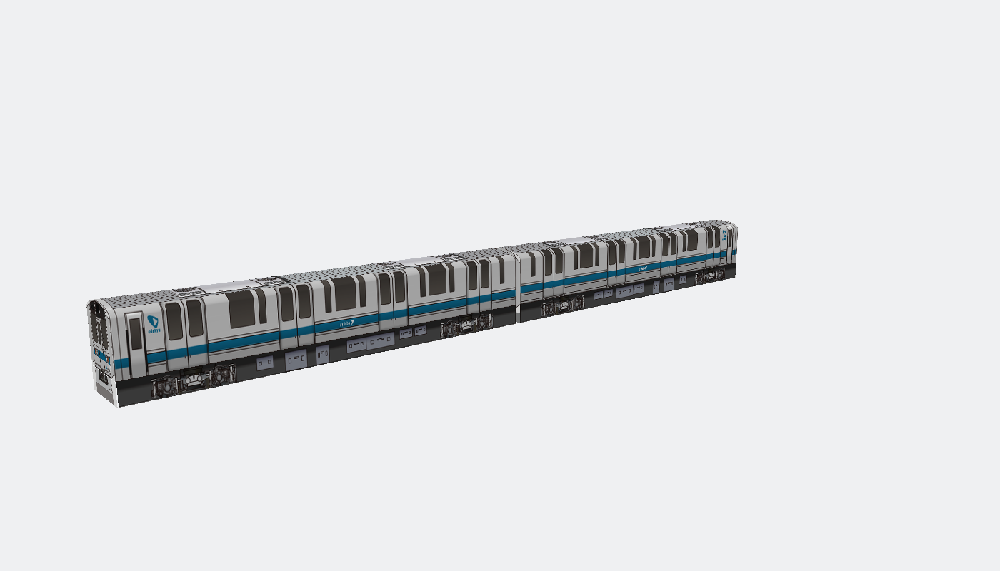

#388 odakyu-30000 —— 胶耳未清（ge-1）
MC 原话：胶耳未清
根因：端件裁切框把纸模粘贴耳框进贴图，端盖 UV 拉满车宽后在司机面两侧形成通高白竖条；贴图问题，非几何。6 辆编组。
修法：端件框横向收紧到端面轮廓、只取端面本身，裙板白纸残留同步清；手术式 GLB 补丁。car2–car5 的 end1 与各自 front 共用，同改。
推送：提交 8f1183f1（models-pipeline，一车一 commit；wakayama-2270 为两 commit）
完整 SHA：8f1183f133ae6ff68bf69f99018ee4ebe976377c
#389 odakyu-4000 —— 胶耳未清（ge-1）
MC 原话：胶耳未清
根因：端件裁切框把纸模粘贴耳框进贴图，端盖 UV 拉满车宽后在司机面两侧形成通高白竖条；贴图问题，非几何。单辆车。
修法：端件框横向收紧到端面轮廓、只取端面本身；司机端裙板梯形窄耳改 fill 逐行填邻近面色（crop 会拉伸车钩罩）。
推送：提交 c9da609d（models-pipeline，一车一 commit；wakayama-2270 为两 commit）
完整 SHA：c9da609db2c94fd31ee79e70a7f50e173520aec3
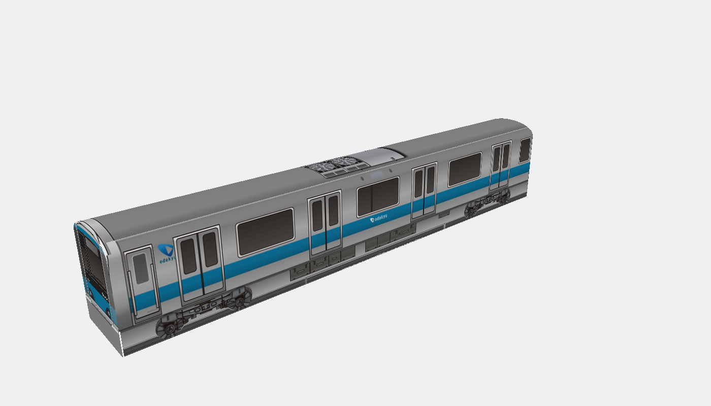

#390 odakyu-5000 —— 胶耳未清（ge-1）
MC 原话：胶耳未清
根因：端件裁切框把纸模粘贴耳框进贴图，端盖 UV 拉满车宽后在司机面两侧形成通高白竖条；贴图问题，非几何。
修法：端件框横向收紧到端面轮廓、只取端面本身，裙板白纸残留同步清；手术式 GLB 补丁。car2 共用 car1 全部 4 张贴图，同改；裙板窄耳 fill。
推送：提交 bc575a8a（models-pipeline，一车一 commit；wakayama-2270 为两 commit）
完整 SHA：bc575a8a334c7742333aba10aaea1b68eef1425f
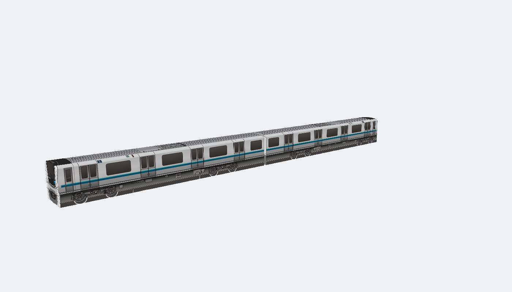
#391 odakyu-60000 —— 其他（ot-1）
MC 原话：其他：这个车是楔形的
根因：第一轮 OT-1 的 GLB warp（R=0.55）不够：原版前盖是 29 三角扇形，warp 只能把它顶成带硬折的帐篷（拱形折线就是扇形边）；且前脸/裙板贴图就是纸模端件 1:1，折叠拱线、白耳、矩形贯通门全在图上，warp 去不掉。MC 14:31 看后判“还是不行，重新做”。
修法：第二轮从原版 GLB 重做：25×15 分级网格新前盖（625 tris）＋C1 平滑 warp（车顶后移 0.50 m）＋前脸/裙板/侧面鼻端贴图按实车重画（双片圆角风挡、雨刮、LED 行显、车钩凹口、前灯）；under/skirt alphaMode 恢复 MASK/0.5。
推送：提交 f307c96f（models-pipeline，一车一 commit；wakayama-2270 为两 commit）
完整 SHA：f307c96f07f7d3d24bcc6d017af282d788dcd323
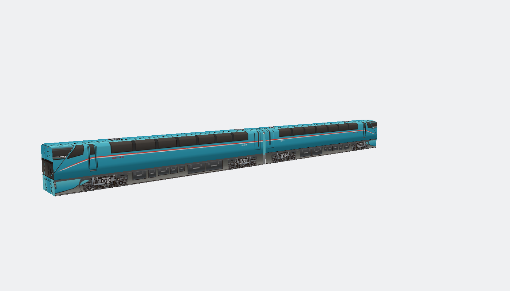
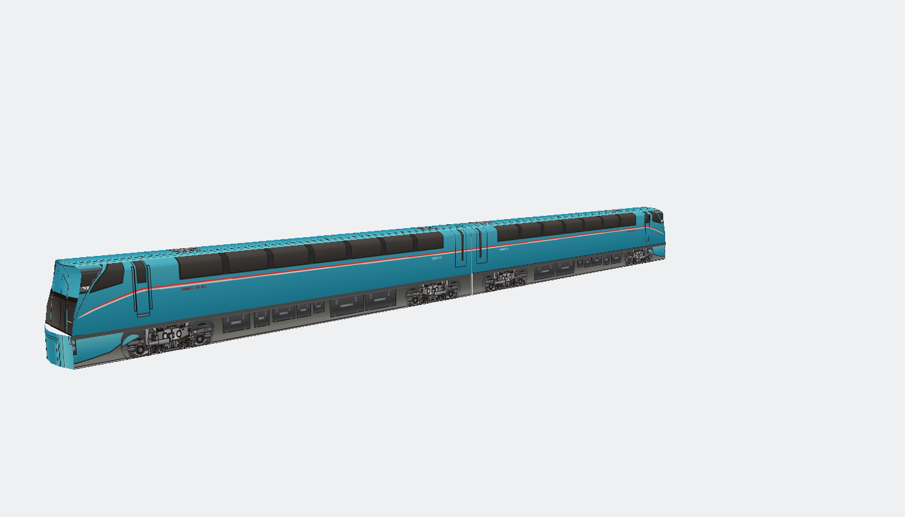
#392 odakyu-70000 —— 其他（ot-1）
MC 原话：其他：这个车是楔形的
根因：与 #404 同一辆小田急70000形 GSE（异名重复 slug）；front 贴图是同一张鼻锥件但上下颠倒（翻转后平均绝对差 20.9、不翻转 57.6），同样有空矩形框＋2 红圆点“控制面板”＋空白显示器状风挡＋下方大块灰平板；另是更老的纸模建法（car_length_m 20.8 m、车高 3.7 m、alphaMode 全丢）。第一轮 OT-1 只做了楔形 warp R=0.55，没修贴图问题。
修法：第二轮删后重建（与 #404 同法，MC 14:34 授权“按实际情况做决断”）：删 commit 8f76cc1a（index 663→662），再从同一张图纸从头重建（loft 光滑流线展望头，前脸按实车重画：整块全景风挡到 y=1.15 m、无电脑面板、无横线）；车长 20.8→21.3 m、车高 3.7→4.057 m 按实车纠正；consist 改用现行写法（与 #404 相同）；under/skirt alphaMode 恢复 MASK/0.5。重建 commit 2de32a62（index 662→663）。两份模型现几何/纹理逐像素相同，仅内嵌模型名不同；异名重复 slug 是否合并留待 MC 定夺，本轮不动。
推送：提交 2de32a62（models-pipeline，一车一 commit；wakayama-2270 为两 commit）
完整 SHA：2de32a6232ed57f4735057ed1860bb0a50a58c19
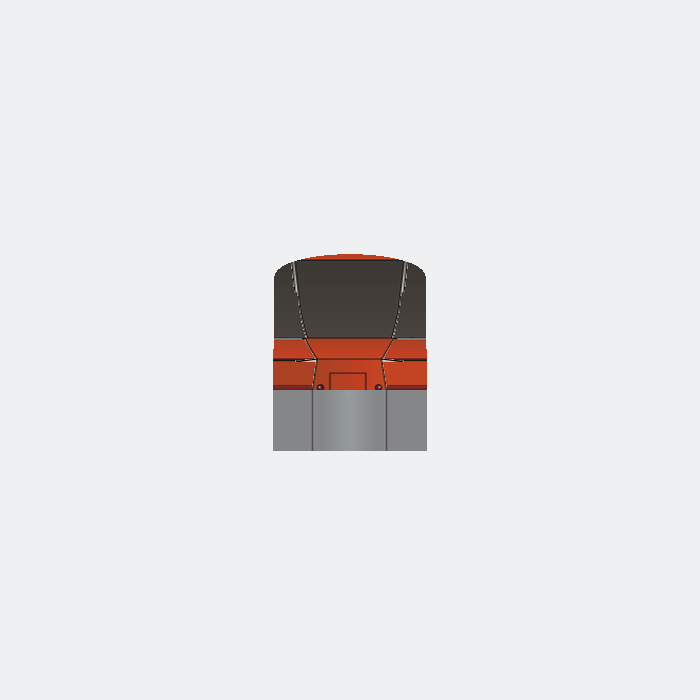

#393 odakyu-8000 —— 胶耳未清（ge-1）
MC 原话：胶耳未清
根因：端件裁切框把纸模粘贴耳框进贴图，端盖 UV 拉满车宽后在司机面两侧形成通高白竖条；贴图问题，非几何。3 辆编组。
修法：端件框横向收紧到端面轮廓、只取端面本身，裙板白纸残留同步清；手术式 GLB 补丁。car2 end1 共用 car2 front、car3 front/skirt 共用 car1。诚实说明：front/end1 高带白占比残留 0.056–0.073 为车顶圆弧上方行（端盖上不渲染区），中带仅 0.001–0.019，端面正视图确认面部已铺满，判通过。
推送：提交 c5aade98（models-pipeline，一车一 commit；wakayama-2270 为两 commit）
完整 SHA：c5aade98676fcc203317ea73f318de79dd86588d
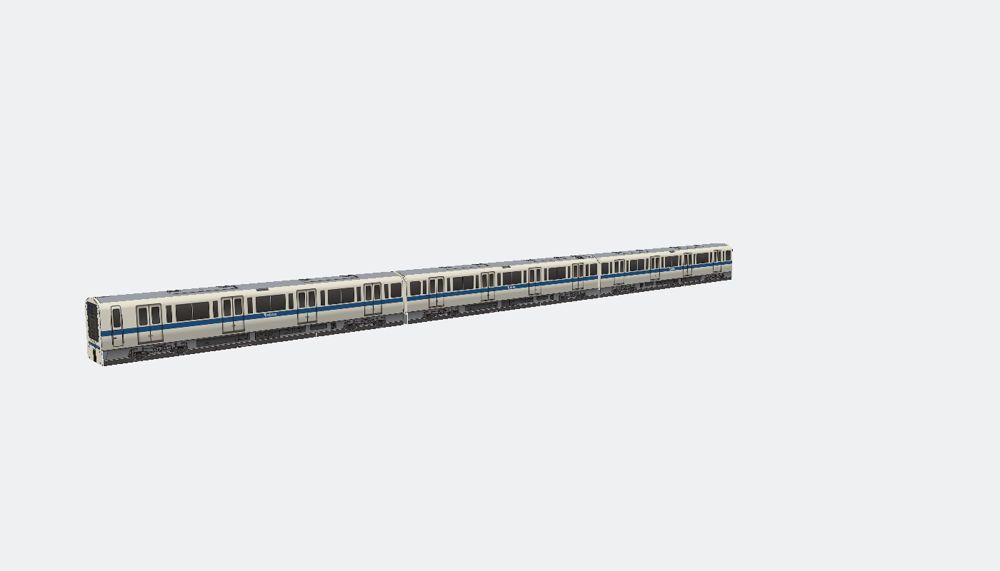
#397 osakametro-30000 —— 胶耳未清（ge-2）
MC 原话：胶耳未清
根因：端件裁切框把纸模粘贴耳框进贴图，端盖 UV 拉满车宽后在司机面两侧形成通高白竖条；贴图问题，非几何。面约 72–73%。
修法：端件框横向收紧到端面轮廓、只取端面本身，裙板白纸残留同步清；手术式 GLB 补丁，只换内嵌 PNG，不重建，几何零改动（三角数 11,126 不变）。共享贴图同改一次（car2 front＝end1）。
推送：提交 75f28263（models-pipeline，一车一 commit；wakayama-2270 为两 commit）
完整 SHA：75f28263d3e4743caa999c32d8285046fb02b473
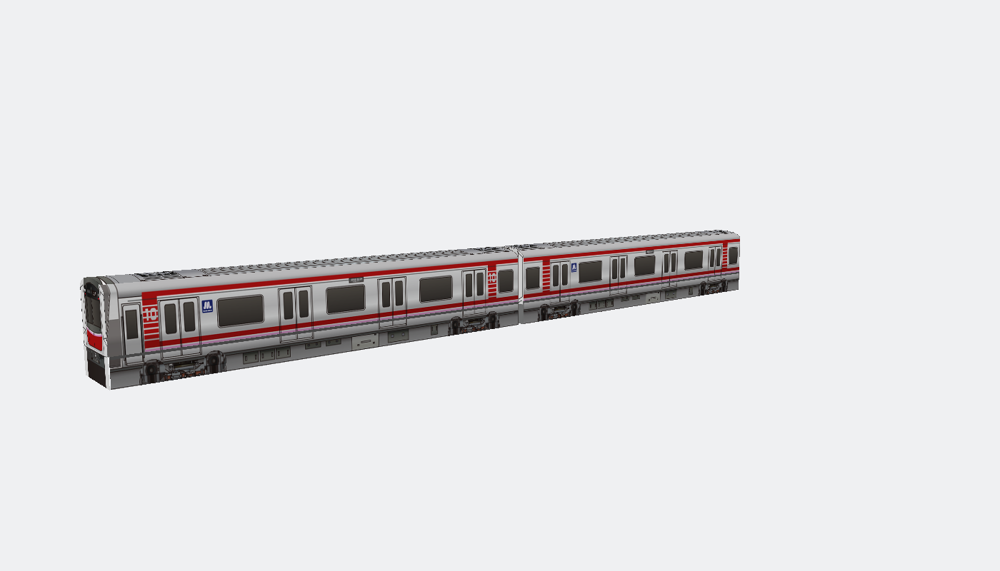
#398 osakametro-70 —— 其他（ot-1）
MC 原话：其他：く
根因：纸模端盖是全平直竖板，く只画在侧面贴图里。
修法：く warp R≈0.29（图纸车顶后收 0.56 m 有夸大，照片折角较缓，取照片值；车顶中心 −0.276、边缘 −0.293、裙板 −0.013）。
推送：提交 1e167d99（models-pipeline，一车一 commit；wakayama-2270 为两 commit）
完整 SHA：1e167d99739dbd0d53f6de8e207b461db939154e
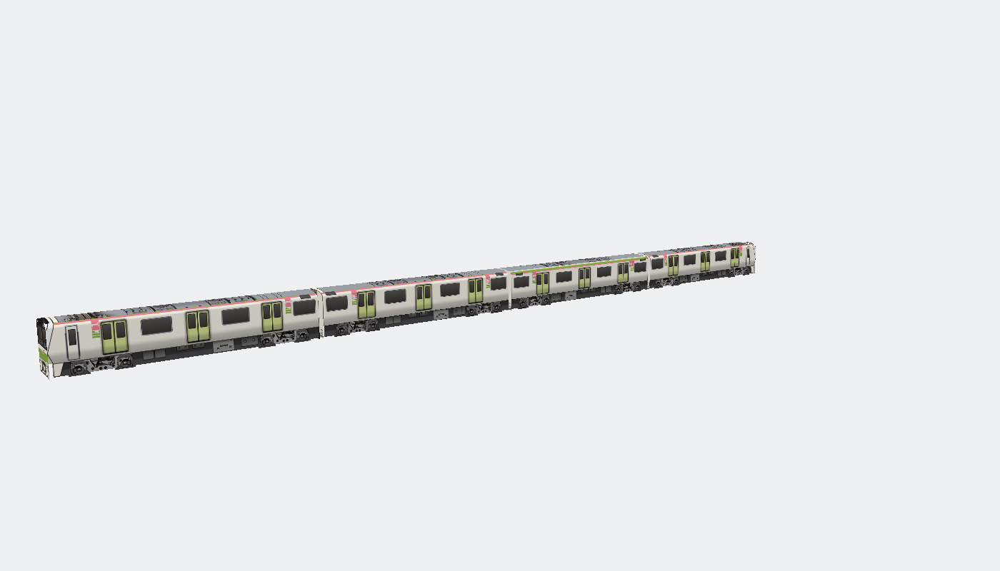

#399 osakamono-3000 —— 编组错误（fm-1）
MC 原话：编组错误
根因：实车 4 辆，模型只有 2 辆，缺 3300 中间车与 3400 尾端司机车。
修法：补 car3（3300 中间车）、car4（3400 翻转司机车），2→4 辆；原 car_length_m 是列表 [15.76, 14.48]（站内 lenOf 取到列表会变 NaN），改为标量 15.76＋middle 14.48＋逐辆 length。
推送：提交 65b82278（models-pipeline，一车一 commit；wakayama-2270 为两 commit）
完整 SHA：65b8227892cde41cb20b104abb9ad0417c579fde
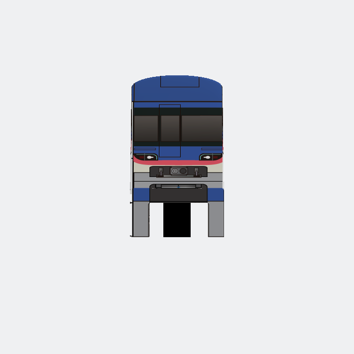

#400 osakanewtram-200 —— 其他（ot-1）
MC 原话：其他：斜车头
根因：纸模端盖是全平直竖板，斜头只画在侧面贴图里。
修法：斜头 warp R＝0.50（图纸斜度仅 0.10 m、远小于照片，按照片取；车顶中心 0.499、边缘 0.549、腰线边缘 0.378、裙板边缘 0.192）；内端（贯通端）不动。模型 8.03 m/辆 vs 实车 7.60 m（＋5.7%），只修头型、不动尺寸。
推送：提交 7a5e3f26（models-pipeline，一车一 commit；wakayama-2270 为两 commit）
完整 SHA：7a5e3f26e0d245e4ffa95814c3fce96c5fc2b959
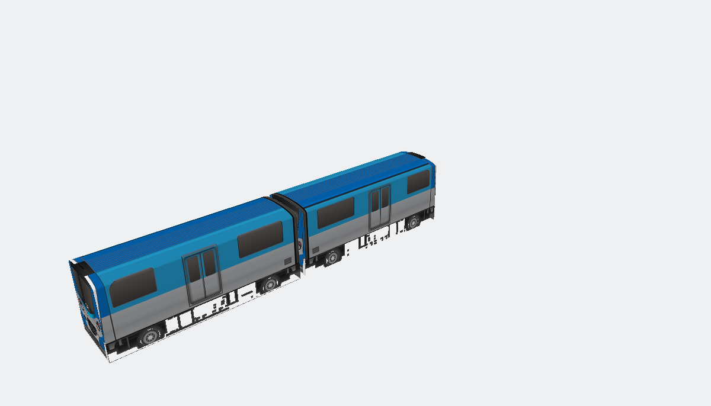

#404 osakyu-70000 —— 其他（ot-1）
MC 原话：其他：编组错误 而且是尖头车
根因：第一轮 OT-1 只修了编组（car2 重建为 Tc）＋尖头 warp R=0.55，但前脸仍错：纸模鼻锥件是折叠展开图不是立面图，拍平后红司机面板（空矩形框＋2 圆点）像控制面板、大块深色梯形像空白显示器，折叠线横切风挡；头型是平板楔形而非实车光滑曲面。MC 14:31 看后判“司机贴图上下都是电脑，头型也不对，删掉，重新做”。
修法：第二轮删后重建：删 commit 73b796d0（index 663→662），再从图纸从头重建（loft 光滑流线展望头，底边下探到 y=1.15 m＋后倾前裙板，前脸按实车重画：整块全景风挡、无电脑面板、无横线切断玻璃）；under/skirt alphaMode 恢复 MASK/0.5；consist [21.3, 21.3] 不变。重建 commit ccb413d8（index 662→663）。
推送：提交 ccb413d8（models-pipeline，一车一 commit；wakayama-2270 为两 commit）
完整 SHA：ccb413d8909c6f05ff9e3e6f9027561ac0b6bb93
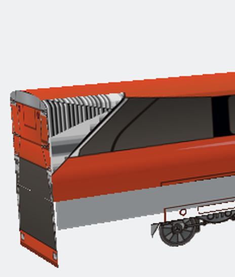

#405 oumi-900 —— 其他（ot-2）
MC 原话：其他：斜头车
根因：纸模端盖是全平直竖板，斜头只画在侧面贴图里；辆数对（2 辆编成）。
修法：斜头 warp R＝0.30 纯后倾（无 plan 折角，ja.wikipedia 西武101系「前面单平面后倾」核实），两端头车。涂装旧「淡海号」深蓝未动（MC 只判斜头）。
推送：提交 99545895（models-pipeline，一车一 commit；wakayama-2270 为两 commit）
完整 SHA：99545895bdcd7e6ad53605ce57e6956adb7f5424

#407 sagano-de10 —— 贴图颠倒（tx-1）
MC 原话：贴图颠倒
根因：MC 判贴图颠倒，但全部 16 张贴图逐面核查均正立，无可翻贴图；肉眼可见的两处毛病是图纸内容错误——机车罩画成黑色（实车 DE10 1104 红色）、SK200 驾驶端玻璃画成黑色菱形网纹板（实车为全景玻璃）；侧面头徽正立，竖翻会翻倒。
修法：未推（图纸内容错误、翻转修不了）：机车罩画黑 vs 实车红、驾驶端玻璃画黑菱形网纹 vs 实车全景玻璃；需重绘/改色（建模重做范畴）。MC 14:34 指令先不做（暂缓）。详见 tx-1/REPORT_sagano-de10.md.
推送：未推——未推：无可翻贴图，图纸内容错误（机车罩画黑 vs 实车红、驾驶端玻璃画黑菱形网纹 vs 实车全景玻璃），翻转修不了；MC 14:34 指令先不做（暂缓）
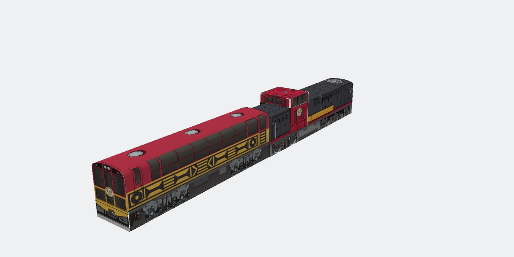
#411 sanki-801 —— 胶耳未清（ge-2）
MC 原话：胶耳未清
根因：端件裁切框把纸模粘贴耳框进贴图，端盖 UV 拉满车宽后在司机面两侧形成通高竖条；贴图问题，非几何。贯通门耳是黄色的（RGB≈233,196,109），判据是轮廓线外＋无面部内容＋翻折线，不是颜色。
修法：端件框横向收紧到端面轮廓、只取端面本身，裙板白纸残留同步清；手术式 GLB 补丁。共享贴图同改一次（car2 front＝end1）。
推送：提交 575f1fe1（models-pipeline，一车一 commit；wakayama-2270 为两 commit）
完整 SHA：575f1fe1f1050f3d8dda9fa6a0392e1b0368bade

#413 sanyo-3000 —— 胶耳未清（ge-2）
MC 原话：胶耳未清
根因：端件裁切框把纸模粘贴耳框进贴图，端盖 UV 拉满车宽后在司机面两侧形成通高竖条；贴图问题，非几何。面约 80%。
修法：端件框横向收紧到端面轮廓、只取端面本身，裙板白纸残留同步清；手术式 GLB 补丁。car2 skirt_gang_top2 有一条预存全宽横向白带（贴图 22–61 行），不是胶耳，在内侧端面，原样保留。
推送：提交 61c27863（models-pipeline，一车一 commit；wakayama-2270 为两 commit）
完整 SHA：61c27863f833d883348d10700e36117441d1c842
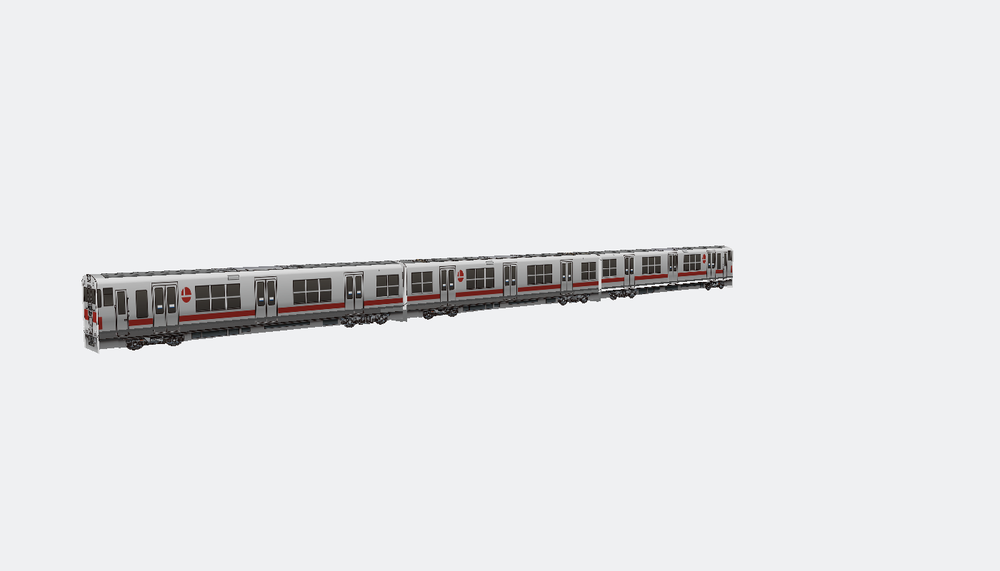

#414 sanyo-5000 —— 胶耳未清（ge-2）
MC 原话：胶耳未清
根因：端件裁切框把纸模粘贴耳框进贴图，端盖 UV 拉满车宽后在司机面两侧形成通高竖条；贴图问题，非几何。面约 65%。
修法：端件框横向收紧到端面轮廓、只取端面本身；梯形裙板（skirt_cab_top1）裁切＋按行填色 2,783 px；手术式 GLB 补丁。共享贴图同改（car2/car3 裙板）。
推送：提交 32a31aa3（models-pipeline，一车一 commit；wakayama-2270 为两 commit）
完整 SHA：32a31aa302a0a77f89cafa4000ecc31044a03126

#415 sanyo-5030 —— 胶耳未清（ge-2）
MC 原话：胶耳未清
根因：端件裁切框把纸模粘贴耳框进贴图，端盖 UV 拉满车宽后在司机面两侧形成通高竖条；贴图问题，非几何。面约 71–72%。
修法：端件框横向收紧到端面轮廓、只取端面本身；裙板比面窄（[89,439) vs 面 [75,451)），按裙板自己边界裁，梯形裙板按行填色各 1,200 px；手术式 GLB 补丁。car1＝car2 全 8 图共享，同改。
推送：提交 a6205cfe（models-pipeline，一车一 commit；wakayama-2270 为两 commit）
完整 SHA：a6205cfe19c04952c7d0d8805be6fad415134e0b
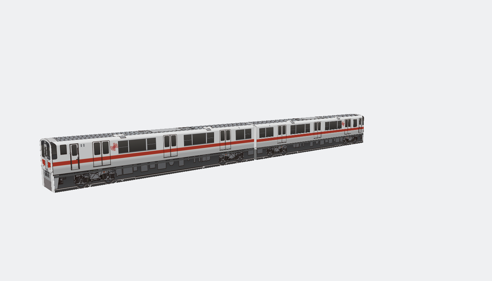

#416 sanyo-6000 —— 胶耳未清（ge-3）
MC 原话：胶耳未清
根因：端件裁切框把纸模粘贴耳框进贴图，端盖 UV 拉满车宽后在司机面两侧形成通高白竖条；贴图问题，非几何。司机面＋贯通端双侧空白梯形耳＋裙板白楔，面 72.6–73.2%。
修法：端件框横向收紧到端面轮廓（面 72.6–73.2%→100%）、裙板逐行边白填充；手术式 GLB 补丁，只换内嵌贴图，几何逐字节未变。
推送：提交 246ea4a3（models-pipeline，一车一 commit；wakayama-2270 为两 commit）
完整 SHA：246ea4a3af13614b33fb1943f01fde7748210651

#423 seibu-001 —— 编组错误（fm-1）
MC 原话：编组错误
根因：实车 8 辆，模型仅 1 辆 Tc1（クハ001-01）。
修法：未推（无图）：rail-trainpdf 全库 8197 个文件里 001 系只有 1 份图纸（1 辆完整头车＋截断的第 2 辆＋中间车车顶小件），缺 7 辆且中间车（M/T 各型窗门布局不同）与司机车不是同型，无法按图纸补；镜像 Tc1 得 [Tc1,Tc2] 也仍是 2/8 错编组。故不虚构、不硬拼，模型/consist/index/map 均未动。
推送：未推——未推：无图（实车 8 辆、模型仅 1 辆；全库只有 1 份图纸，缺 7 辆无法补；MC 14:34 授权决断：先接受现有子集，等有图再说）

#425 seibu-2000 —— 其他（ot-2）
MC 原话：其他：这个你自行核查一下编组是否正确
根因：辆数对（8 辆编成），但两端司机面朝内（修前 plain FAIL / site FAIL，2 处司机面↔贯通面错接）。
修法：car1/car8 各绕 Y 转 180°，修后 plain OK / site OK。附带：模型无车号、无受电弓（M1/M3/M5 应有）是图纸/模型既有缺失，不属 verdict 范围，未擅自加。
推送：提交 d9e18da6（models-pipeline，一车一 commit；wakayama-2270 为两 commit）
完整 SHA：d9e18da641b158dc0b5c9ae70ea61f5ced0f637c
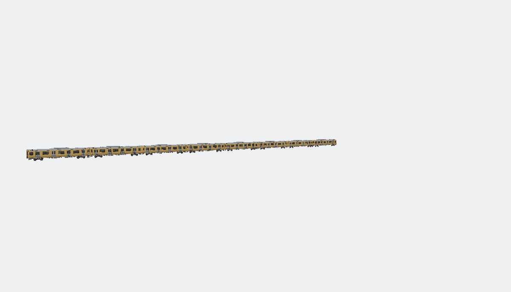

#426 seibu-20000 —— 其他（ot-2）
MC 原话：其他：这个没有其他车厢了吗
根因：原仅 1 辆 Tc1；MC 问“这个没有其他车厢了吗”——实车 8 辆编成 20151F。
修法：补 car2–car8 成 8 辆编成（中間车 car2–7 按立面图手术：司机门→窄窗、去 logo/轮椅标/左端蓝竖条；car8＝car1 绕 Y 镜像；consist.json＋car2–8）。6 辆中間车共用同一 GLB（无受电弓，图纸与 car1 均无）；car8 前脸仍显示「本川越」，按 FM-2 先例写明、不手改。
推送：提交 12c2df8d（models-pipeline，一车一 commit；wakayama-2270 为两 commit）
完整 SHA：12c2df8dc07fc382f40683c1278b4e3d3a9a4bff
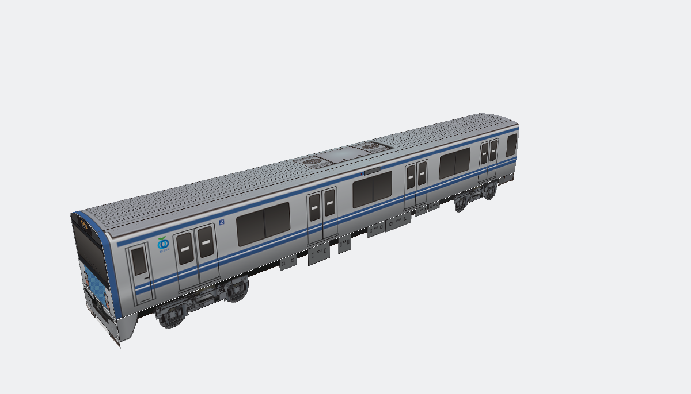

#430 seibu-9000 —— 胶耳未清（ge-3）
MC 原话：胶耳未清
根因：端件裁切框把纸模粘贴耳框进贴图，端盖 UV 拉满车宽后在司机面两侧形成通高竖条；贴图问题，非几何。司机面＋贯通端双侧黄色梯形耳（与车身同色）＋裙板白楔，面 69.2% / 75.8–76.0%。
修法：端件框横向收紧到端面轮廓、裙板逐行边白填充；手术式 GLB 补丁。耳片与车身同为黄色，只看“白不白”会漏掉——判据是“面轮廓线之外＋无面部内容＋带翻折线”，不是颜色。
推送：提交 17bf14ba（models-pipeline，一车一 commit；wakayama-2270 为两 commit）
完整 SHA：17bf14bad1c8d3e8a5d708d6ba0c035bf782cb9a
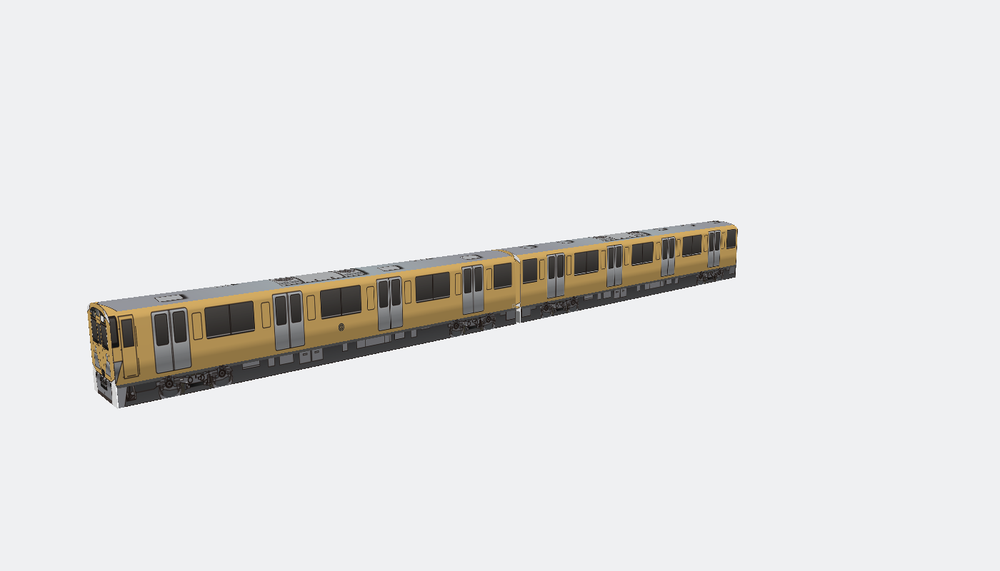

#432 senboku-9300 —— 其他（ot-2）
MC 原话：其他：这个没有其他车厢了吗
根因：实车 4 辆编成（9301F），模型仅 1 辆 Mc1，缺 3 辆。
修法：未推（无图）：rail-trainpdf、pepar.net、南海官网纸模页三处均无 9300/8300 图纸，无法补车。MC 14:34 授权决断：先接受现有子集，等有图再说。car1 本身无问题（11,126 tris，0/0/0），自审图已存档.
推送：未推——未推：无图（实车 4 辆、模型仅 1 辆；三处图纸来源均无 9300/8300 图；MC 14:34 授权决断：先接受现有子集，等有图再说）
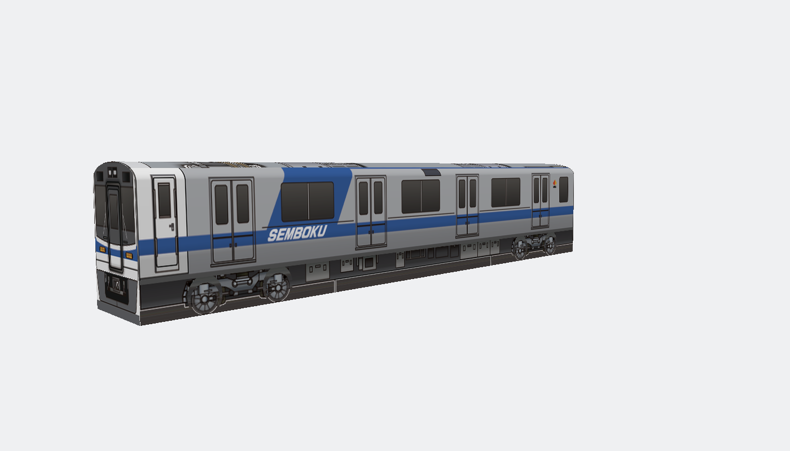
#433 sendai-sub-1000 —— 其他（ot-2）
MC 原话：其他：小く
根因：纸模端盖是全平直竖板，小く只画在侧面贴图里；辆数对（4 辆编成：1100 Tc1＋1200 M1＋1300 M2＋1600 Tc2）。
修法：小く warp R＝0.12＋centre_back F＝＋0.12（浅 V＋顶部后倾），两端头车。
推送：提交 34316112（models-pipeline，一车一 commit；wakayama-2270 为两 commit）
完整 SHA：34316112290da63643b631defd64d3e559b7e92d
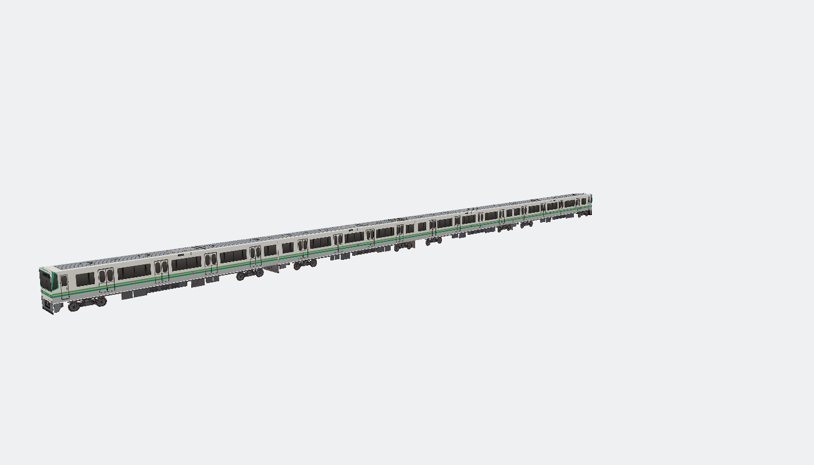
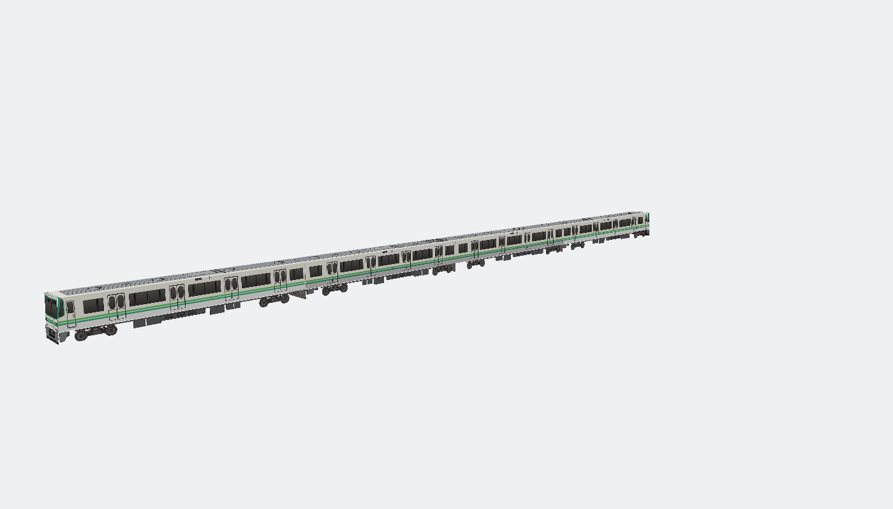
#434 sendai-sub-2000 —— 其他（ot-3）
MC 原话：其他：小く
根因：小く——前脸以伊达政宗兜前立三日月线为界，上部平面、下部曲面，く在下部曲面、幅度小；实车 4 辆、模型 2 辆子集。
修法：从头重做（原 OT-3 专员被拦截，0 改动；凭 MC 14:34 fresh 授权续做）：实车风挡顶与三日月线基本同一垂直面、裙板底部后缩约 0.26 m，标准 R（顶部后移）是反的形状，改用双侧 profile——Y_TIP=1.35 m、R_TOP=0.06（仅车顶圆角）、R_BOT=0.25（裙板底部后缩）、edge_back F=−0.06；只动两头司机端（car1 HI、car2 LO），贯通端未动；不扩编。alphaMode 按原 GLB JSON 逐材质恢复，前后一致。遗留（未修，待 MC 审核时定）：贴图三日月弧画在 y≈1.82 m（实车约 1.3 m）、风挡仅 0.74 m 高。
推送：提交 52aefb7e（models-pipeline，一车一 commit；wakayama-2270 为两 commit）
完整 SHA：52aefb7e4329ebd2ab24a1ed74748f2005d0a824
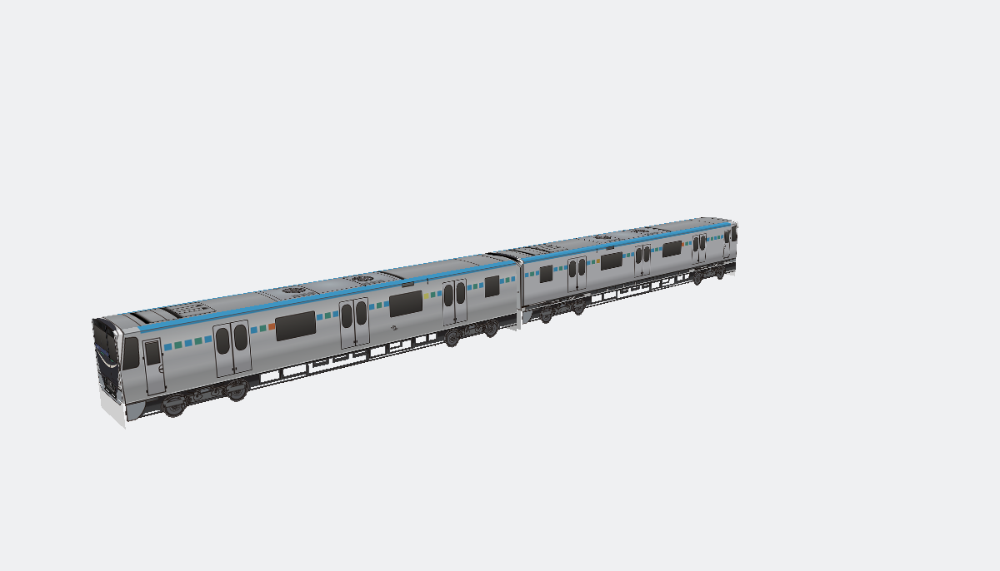

#435 sendai-sub-3000 —— 其他（ot-3）
MC 原话：其他：小く并且还要检查编组齐了没
根因：小く（先头形状为 1000N 系传承的くの字形，折角明确）；编组不齐——实车 4 辆（3100 Tc1—3200 M1—3300 M2—3600 Tc2），模型只有 2 辆，缺 3200/3300 中间车。
修法：从头重做（原 OT-3 专员被拦截，0 改动；凭 MC 14:34 fresh 授权续做）：只动 car1（3100形 Tc1）唯一司机端 HI，く warp R=0.18、edge_back F=−0.15；只修く、不扩编——car2 实为 3300形 M2 中间车（非 Tc2），缺 3200 M1 与 3600 Tc2，且 3200/3600 无图（全库只有 sendai_sub_3000.pdf 一份，2 辆），补不齐。alphaMode 恢复后前后一致。另：图纸把单臂受电弓画在 3100 车顶（实车只有 3200 有弓），属图纸错误，未修，待 MC 定夺是否另修贴图。
推送：提交 47426c87（models-pipeline，一车一 commit；wakayama-2270 为两 commit）
完整 SHA：47426c870d7ae04b733d0869f7128d09669b44f7
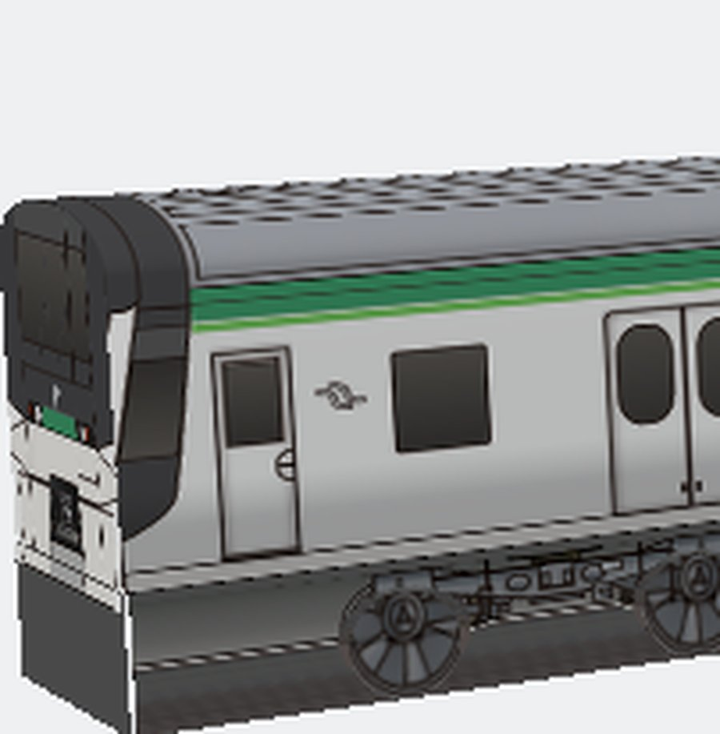

#437 shizuoka-a3000 —— 其他（ot-3）
MC 原话：其他：く
根因：く（FRP 前头、前面非贯通，车端隅柱断面一辺 45°＋风挡后倾，两角向后收）；编组齐全（实车 2 辆，模型 2 辆）。
修法：从头重做（原 OT-3 专员被拦截，0 改动；凭 MC 14:34 fresh 授权续做）：两头司机端（car1 HI、car2 LO）く warp，R=0.18、edge_back F=−0.15；classify_ends 曾把 4 端全误判 CAB，贴图目视核定后才定端。编组齐全（2/2），未动编组/贴图/车号。alphaMode 前后一致。
推送：提交 6ae050c0（models-pipeline，一车一 commit；wakayama-2270 为两 commit）
完整 SHA：6ae050c04134143944ac02297d03ad3322f6939d
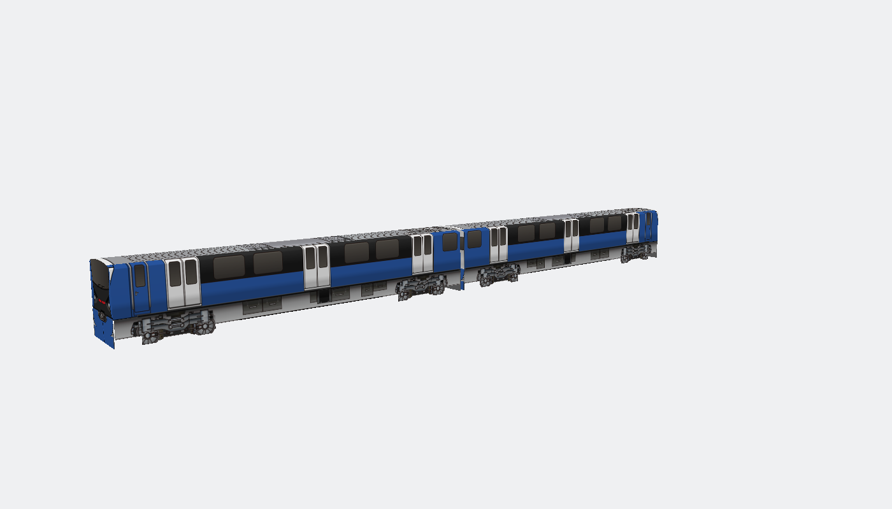
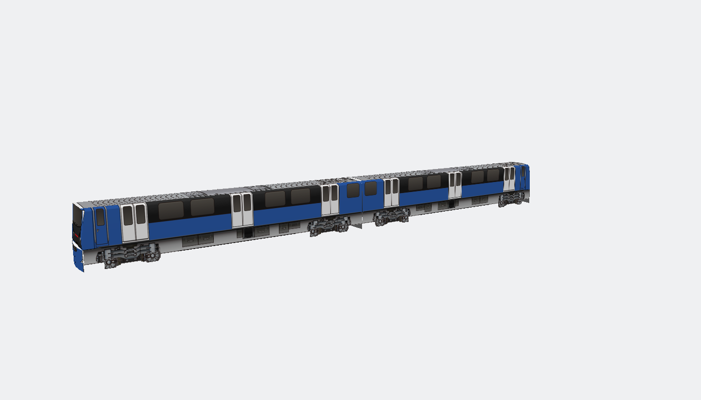
#440 sinano-sr1 —— 贴图颠倒（tx-1）
MC 原话：贴图颠倒
根因：car1＋car2 前脸整面全倒（行先/X 盒在顶、金带在风挡上、红灯在底角、小字倒置在左）。
修法：ROTATE_180（竖翻会把小字留左侧，实车小字在右下）；修后行先顶、灯顶角、风挡居中、金带风挡下、小字正立右下、车钩底，与实车 S102 一致。
推送：提交 8d6cb0c4（models-pipeline，一车一 commit；wakayama-2270 为两 commit）
完整 SHA：8d6cb0c41bd2193b6b1b623e4f123fef4e9557a5
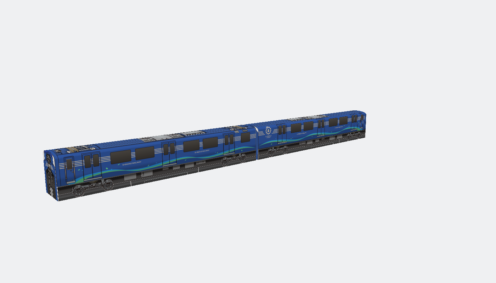

#441 sinkeisei-80000 —— 胶耳未清（ge-3）
MC 原话：胶耳未清
根因：端件裁切框把纸模粘贴耳框进贴图，端盖 UV 拉满车宽后在司机面两侧形成通高白竖条；贴图问题，非几何。司机面＋贯通端双侧空白梯形耳＋裙板白楔，面 72.3–73.4%。
修法：端件框横向收紧到端面轮廓（面 72.3–73.4%→100%）、裙板逐行边白填充；手术式 GLB 补丁，几何逐字节未变。
推送：提交 db0dc483（models-pipeline，一车一 commit；wakayama-2270 为两 commit）
完整 SHA：db0dc4830e622c3a6dbf4a8c67ce5e09927fc05f
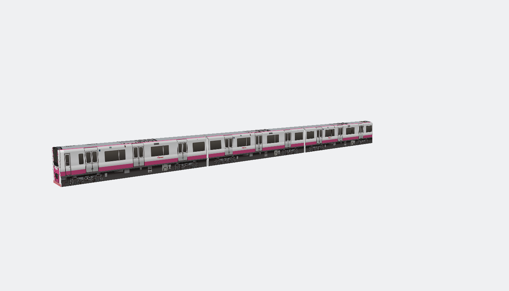

#442 sotetsu-10000 —— 其他（ot-3）
MC 原话：其他：く
根因：く（E231 系基础，圆滑曲面鼻锥，非折线く）；实车 8/10 辆、模型 2 辆子集。
修法：从头重做（原 OT-3 专员被拦截，0 改动；凭 MC 14:34 fresh 授权续做）：两头司机端（car1 HI、car2 LO）圆滑曲面鼻锥 warp，R=0.17、edge_back F=−0.12（图纸实测鼻锥中高最前、车顶与裙板各后收约 0.17 m）；只修几何，未动灯位（原始版腰部灯）、涂装（标准蓝框＋SOTETSU 标志＋橙带）、贴图、车号、编组。alphaMode 前后一致。
推送：提交 ff311303（models-pipeline，一车一 commit；wakayama-2270 为两 commit）
完整 SHA：ff31130367a28f83dbf20475d9bd4a95949f5507
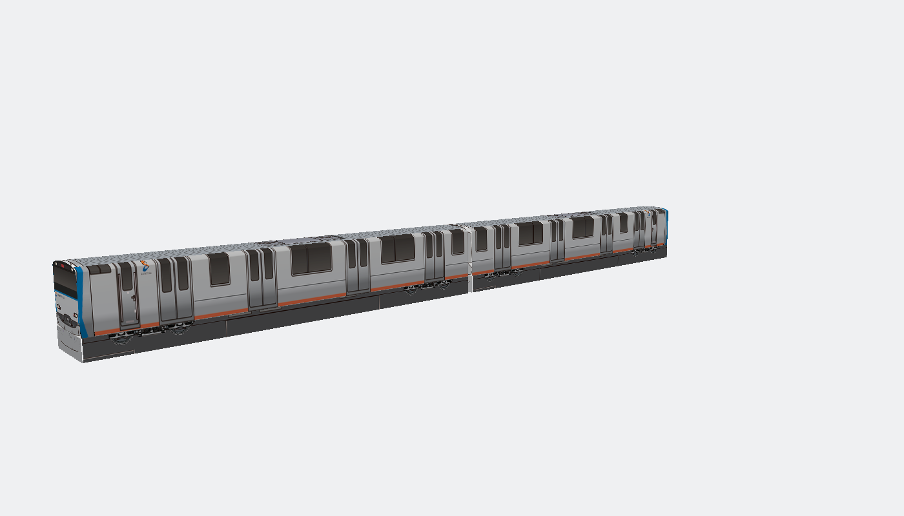
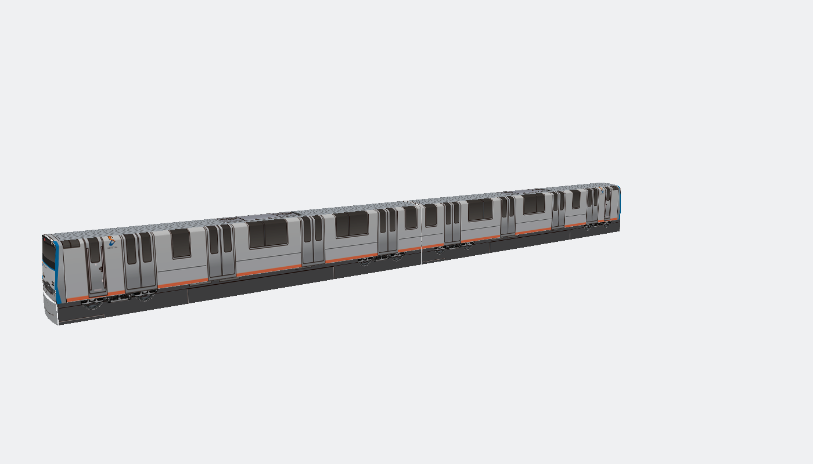
#443 sotetsu-11000 —— 其他（ot-3）
MC 原话：其他：く
根因：く（E233 系基础，前面意匠与 10000 相近，HID 前照灯在车体上部）；实车 10 辆（6M4T）、模型 3 辆子集。
修法：从头重做（原 OT-3 专员被拦截，0 改动；凭 MC 14:34 fresh 授权续做）：car1 HI、car3 LO 两头司机端く warp，R=0.15、edge_back F=−0.15（侧面贴图顶端内收实测 0.14–0.15 m）；car2 中间车未动；不动贴图、车号、灯位、涂装、编组（实车 10 辆，模型 3 辆子集，不扩编）。alphaMode 前后一致。
推送：提交 d144eb3d（models-pipeline，一车一 commit；wakayama-2270 为两 commit）
完整 SHA：d144eb3db9d654be11c09ef87383ba33407350f6
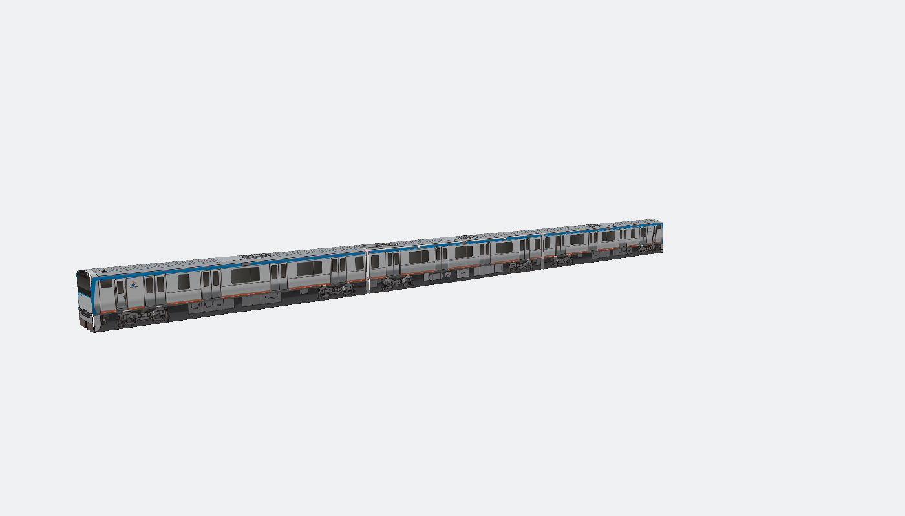

#444 sotetsu-12000 —— 其他（ot-4）
MC 原话：其他：く
根因：纸模端盖是全平直竖板，鼻锥只画在侧面贴图里。
修法：平头 loft 重建为鼻锥几何（top/bot 折线＋鼻尖半宽比 0.92＋鼻尖下 slit panel＋斜裙板；风挡约 20°、鼻尖 y≈2.0）。附带修既存贴图颠倒：car1 front 上下颠倒＋左右镜像，ROTATE_180 修正（只翻上下仍会镜像标志，必须 180° 旋转）。
推送：提交 808920f3（models-pipeline，一车一 commit；wakayama-2270 为两 commit）
完整 SHA：808920f33f4810dec3af8b1535eb467e1f1767b4
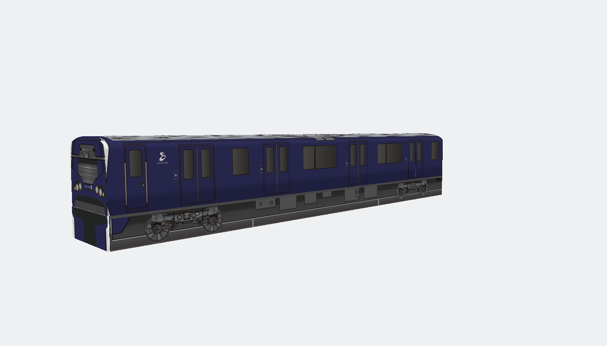

#445 sotetsu-13000 —— 其他（ot-4）
MC 原话：其他：く
根因：纸模端盖是全平直竖板，鼻锥只画在侧面贴图里。
修法：平头 loft 重建为鼻锥几何（top/bot 折线＋鼻尖半宽比 0.88＋鼻尖下 slit panel＋斜裙板；风挡约 30° 最陡、鼻尖 y≈1.9）。
推送：提交 7aac7034（models-pipeline，一车一 commit；wakayama-2270 为两 commit）
完整 SHA：7aac7034d973ddb90ab9b48f9d4d5d2412ffea72

#446 sotetsu-21000 —— 其他（ot-4）
MC 原话：其他：く
根因：纸模端盖是全平直竖板，鼻锥只画在侧面贴图里。
修法：平头 loft 重建为鼻锥几何（鼻尖半宽比 0.90、风挡约 22°、鼻尖 y≈2.0）；swap_caps 修复：car3 的 front 是贯通门、司机面在 end1，交换后重建并核实前脸确为司机面。
推送：提交 c7cecd64（models-pipeline，一车一 commit；wakayama-2270 为两 commit）
完整 SHA：c7cecd641ce857f14cc54ed7df5cadcd11a22cb5
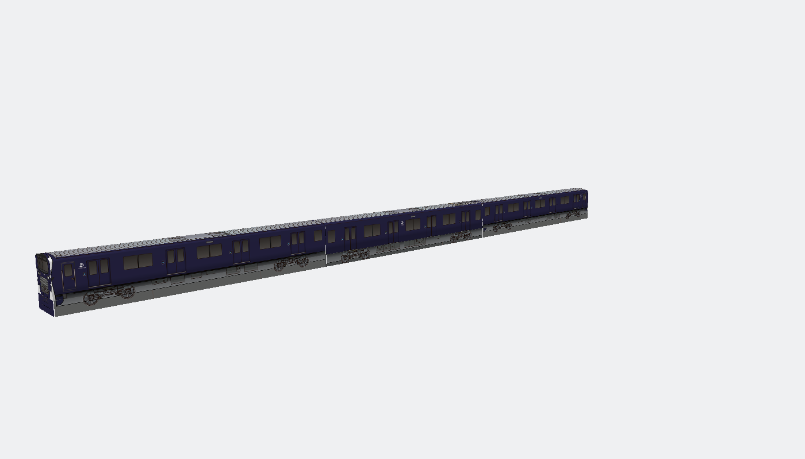

#454 titibu-7800 —— 胶耳未清（ge-3）
MC 原话：胶耳未清
根因：端件裁切框把纸模粘贴耳框进贴图，端盖 UV 拉满车宽后在司机面两侧形成通高白竖条；贴图问题，非几何。司机面＋贯通端双侧空白梯形耳＋裙板白楔，面 76.1–76.3%。
修法：端件框横向收紧到端面轮廓（面 76.1–76.3%→100%）、裙板逐行边白填充；手术式 GLB 补丁，几何逐字节未变。
推送：提交 94f6af56（models-pipeline，一车一 commit；wakayama-2270 为两 commit）
完整 SHA：94f6af5628e8cd39dc63c386138b1a6d297523dd
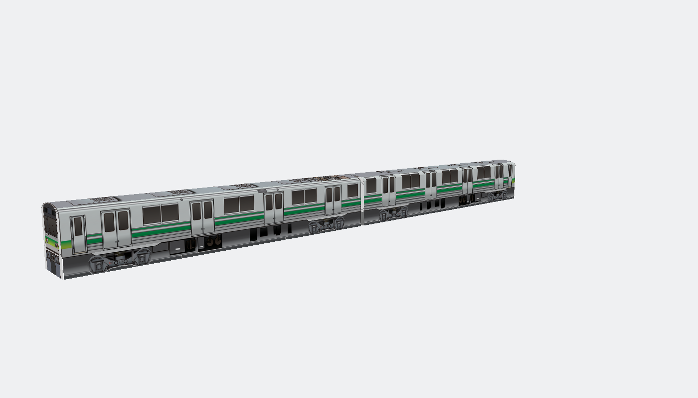
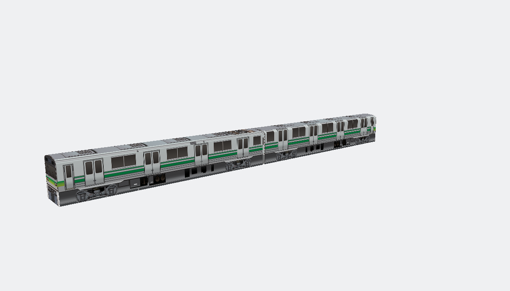
#455 tizukyu-hot3500 —— 胶耳未清（ge-3）
MC 原话：胶耳未清
根因：端件裁切框把纸模粘贴耳框进贴图，端盖 UV 拉满车宽后在司机面两侧形成通高白竖条；贴图问题，非几何。两端共用一张端面图，仅左侧白耳、面整体右偏约 8%＋裙板单侧白纸，面 84.6%。
修法：裁切 [70,456) 一次修掉左耳并纠正右偏＋裙板填补；两端共用同一张端面图，一次裁切两端同修。手术式 GLB 补丁，几何逐字节未变。
推送：提交 7664dff0（models-pipeline，一车一 commit；wakayama-2270 为两 commit）
完整 SHA：7664dff0ac2d7dd4f27f6d3ed5bcfd524c1f68f2
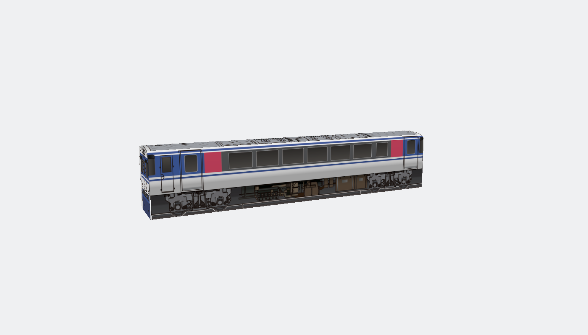
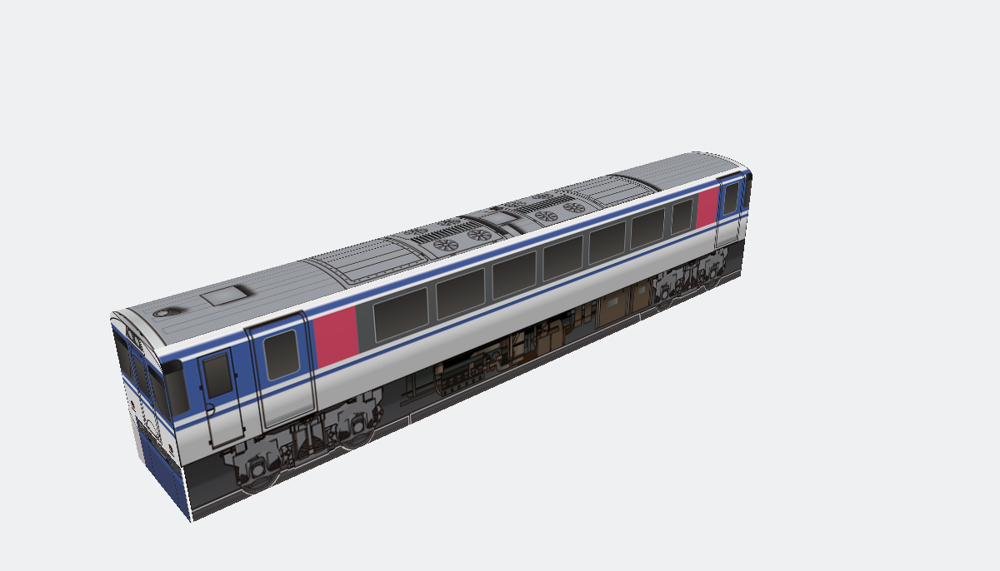
#456 tizukyu-hot7000 —— 编组错误（fm-1）
MC 原话：编组错误
根因：实车 5 辆，模型 3 辆，缺 7050 中间车与 7010 尾端司机车。
修法：补 car4（7050 中间车）、car5（7010 翻转司机车），3→5 辆；7050 绿车厢段图纸两张中间车净片均无绿带/绿标，只能按普通中间车建。
推送：提交 2af9319a（models-pipeline，一车一 commit；wakayama-2270 为两 commit）
完整 SHA：2af9319ad3813eefdfe3424eb0a38fc5c6b4e7b0
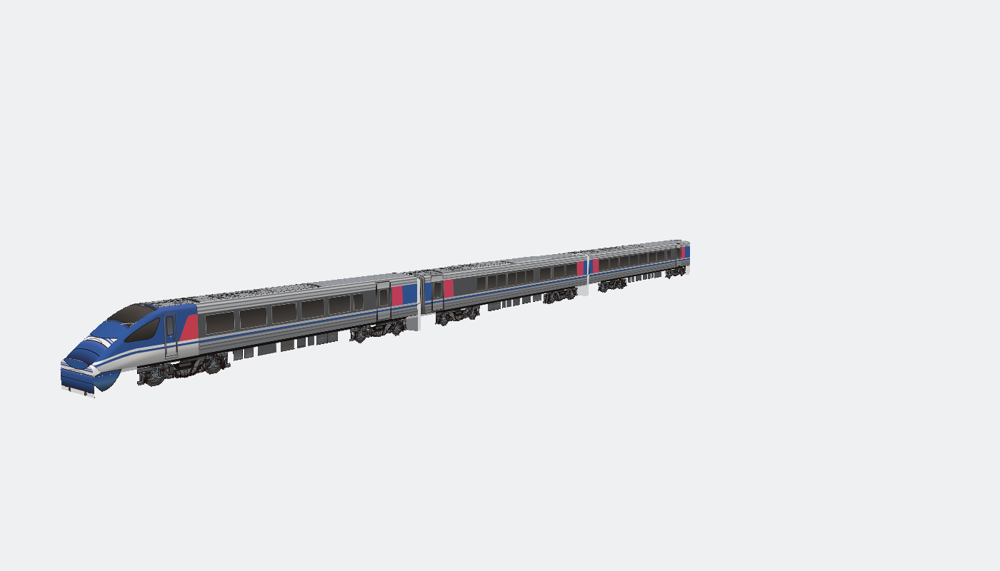
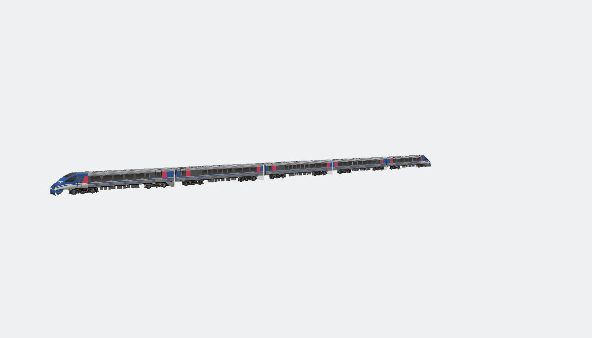
#457 tobu-100 —— 编组错误（fm-1）
MC 原话：编组错误
根因：实车 6 辆，模型 3 辆，缺 3 辆中间车。
修法：补 car4（M2，p3 新建）、car5/car6（M3/M4，复制 p2），3→6 辆；M2 图纸按 20.2 m 画、实车 20.5 m，模型短 0.3 m。
推送：提交 4ddc1c30（models-pipeline，一车一 commit；wakayama-2270 为两 commit）
完整 SHA：4ddc1c30aadb42b523ef36b614811907ece18c51
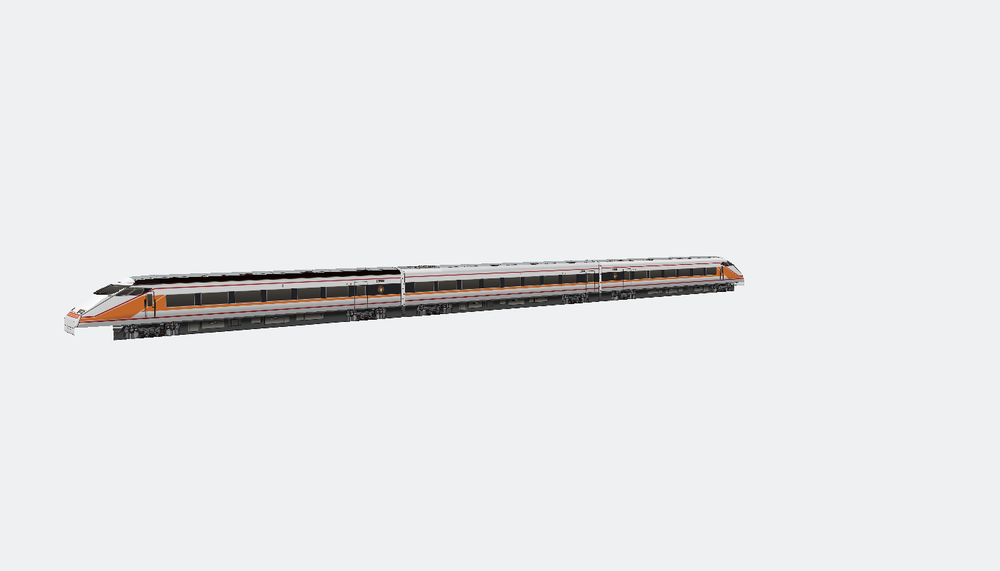

#458 tobu-10000 —— 胶耳未清（ge-4）
MC 原话：胶耳未清
根因：端件裁切框把纸模粘贴耳框进贴图，端盖 UV 拉满车宽后在司机面两侧形成通高白竖条；贴图问题，非几何。面 70.5%→100%。
修法：端件框横向收紧到端面轮廓、只取端面本身，裙板白纸残留同步清；手术式 GLB 补丁，只换内嵌贴图，POSITION 逐字节与 v1 一致。
推送：提交 be6b140a（models-pipeline，一车一 commit；wakayama-2270 为两 commit）
完整 SHA：be6b140a7be2872e5c033d8f3ca55bd2a4288ff0
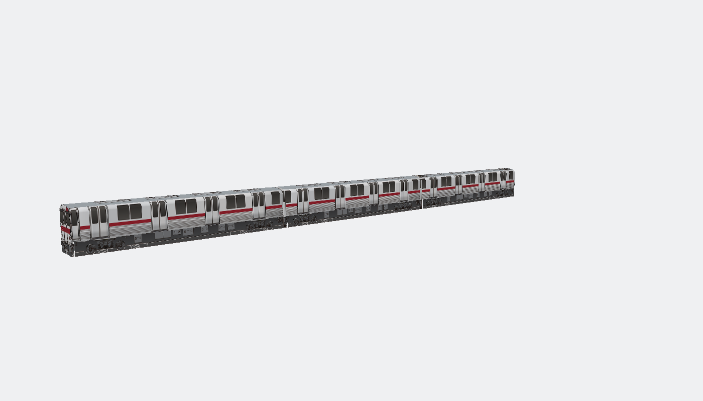
#459 tobu-10030 —— 胶耳未清（ge-4）
MC 原话：胶耳未清
根因：端件裁切框把纸模粘贴耳框进贴图，端盖 UV 拉满车宽后在司机面两侧形成通高白竖条；贴图问题，非几何。面 65.5–69.7%→100%。
修法：端件框横向收紧到端面轮廓、只取端面本身，裙板白纸残留同步清；手术式 GLB 补丁，POSITION 逐字节与 v1 一致。
推送：提交 3e596d1b（models-pipeline，一车一 commit；wakayama-2270 为两 commit）
完整 SHA：3e596d1b0b53aa0778c45fc8e7fec65fbf6f764e
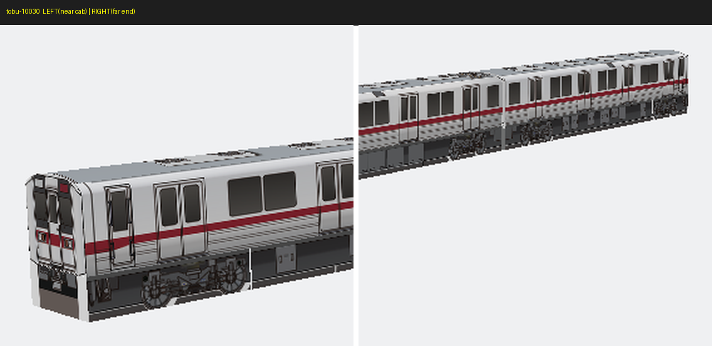

#460 tobu-200 —— 编组错误（fm-1）
MC 原话：编组错误
根因：实车 6 辆，模型 3 辆，缺 3 辆中间车。
修法：补 car4/car6（M2/M4，复制 p2）、car5（M3，p3 新建），3→6 辆。
推送：提交 54c90b22（models-pipeline，一车一 commit；wakayama-2270 为两 commit）
完整 SHA：54c90b2276fa9d525e61c73427a33c1ab5c5b243
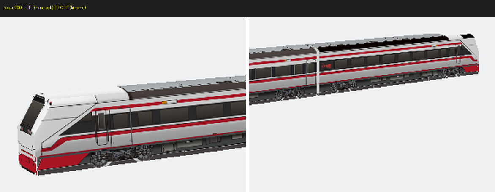

#461 tobu-20000 —— 胶耳未清（ge-4）
MC 原话：胶耳未清
根因：端件裁切框把纸模粘贴耳框进贴图，端盖 UV 拉满车宽后在司机面两侧形成通高白竖条；贴图问题，非几何。面 72.1–73.3%→100%。
修法：端件框横向收紧到端面轮廓、裙板白纸残留同步清；手术式 GLB 补丁。接替专员修正了原 v2 的裁切错误：贯通端面原 (0,574) 等于没裁（右耳全留）、裙板按面轮廓 86 px 裁错（真耳界 176–182 px），修正为端面 [0,477–482)、裙板 [0/176–182, 660/481)；司机面原 (86,660) 误把耳片折线当面轮廓，修正为 [184,660)，重渲后白竖条消失、红带通到边。
推送：提交 7201611b（models-pipeline，一车一 commit；wakayama-2270 为两 commit）
完整 SHA：7201611bbfe7776720b64c632cc175247bfbca5b
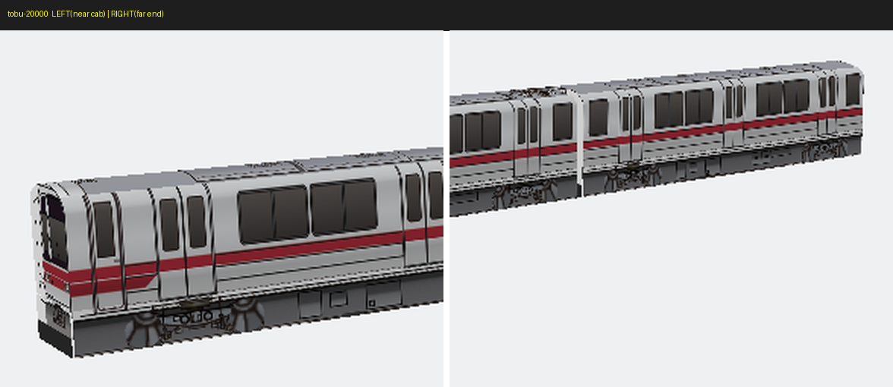

#465 tobu-60000 —— 贴图颠倒（tx-1）
MC 原话：贴图颠倒
根因：单辆 car1 前脸整面全倒。
修法：FLIP_TOP_BOTTOM＋车号“00009”块 vregion 反翻回正立（车号画的是 00009，属图纸画法，不改数字）；旋转 180° 会把灯簇红点换到外侧，故不用。修后行先上、风挡、蓝带＋车号正立、灯带在蓝带下、裙板底，与实车 66601 一致。
推送：提交 75d101bc（models-pipeline，一车一 commit；wakayama-2270 为两 commit）
完整 SHA：75d101bc625f57eea54a1852c0a58e2597304b54
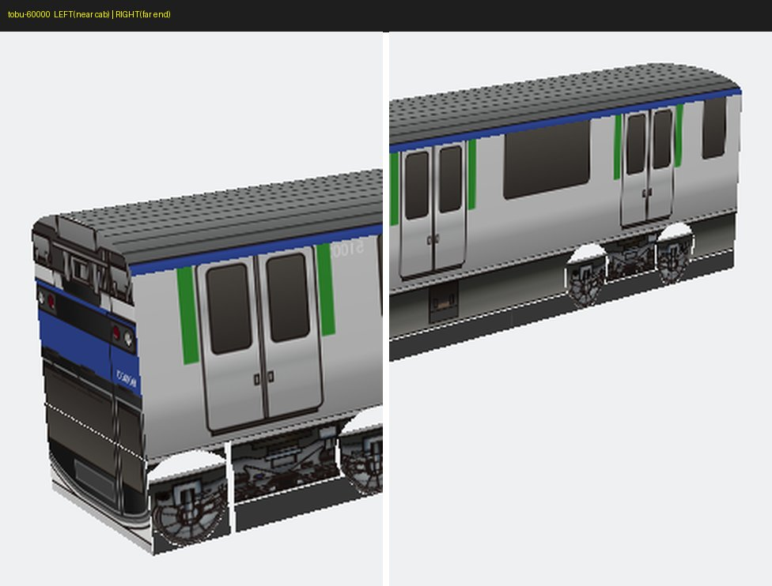

#469 tobu-90000 —— 其他（tx-2）
MC 原话：其他：贴图颠倒 而且胶耳没有清理
根因：整面前脸倒置（蓝在上、表示在裙板里）＋两侧白胶耳。
修法：整图上下翻转（表示/白灯上、风挡中、蓝面下）；重建司机端裙板（蓝尖＋黑联挂框＋暗灰填充）；两侧耳按柱色填补，前脸内部 0 像素改动。⚠️ pepar.net 水印原样保留（只随被去掉的耳瓣一起消失了耳上的字，未另做水印清理；清不清仍待 MC 定夺）。
推送：提交 3372c6dd（models-pipeline，一车一 commit；wakayama-2270 为两 commit）
完整 SHA：3372c6dde485aac0bc8fc1d136bbf64ecc49a68f
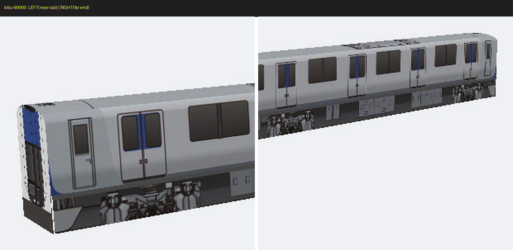

#470 tobu-n100 —— 编组错误（fm-2）
MC 原话：编组错误
根因：实车 6 辆（4M2T），模型只有 1 辆 Tc；另全量胶耳检查判该车胶耳确认（旧 tabclean 没修掉）。
修法：做 2 辆子集 [Tc][Tc]（(b) 方案，car2＝net1＋FLIP_Y180）；同趟修胶耳（端件框收紧＋clean_tight 银柱色填，右缘白像素 8259→29）；实车 6 辆无图补不满。
推送：提交 61e9b103（models-pipeline，一车一 commit；wakayama-2270 为两 commit）
完整 SHA：61e9b103281be319fb2927a05bb40f56f8946cde
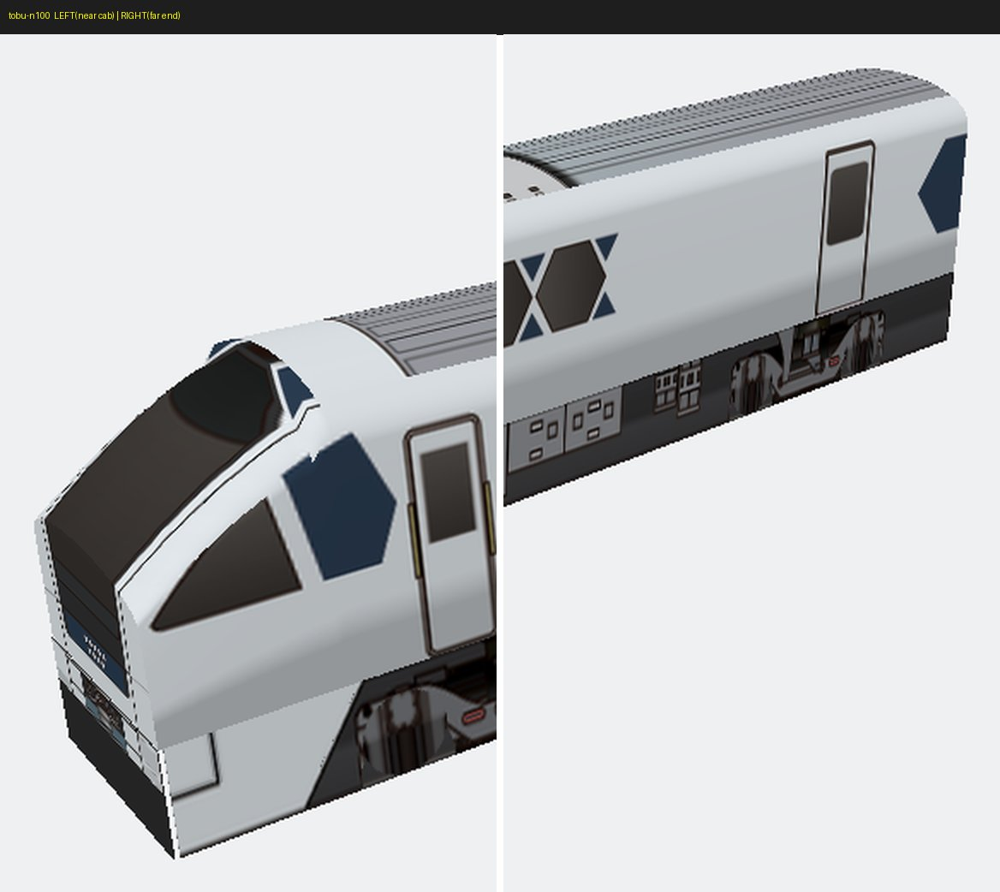

#472 toei-5500 —— 编组错误（fm-2）
MC 原话：编组错误
根因：实车 8 辆，模型 2 辆子集 [5501-1 M1c][5501-8 M8c]，缺 6 辆中间车。
修法：未推（无图）：图纸库只有 1 张先头车净片；另一份 tokyotoei_5500_kidou.pdf 是 1954 年都電 PCC 有轨电车，与都营 5500形无关。2 辆子集方向本身正确（diag plain OK / site OK），错只在缺车。
推送：未推——未推：无图（实车 8 辆、模型 2 辆；图纸库只有 1 张先头车净片；MC 14:34 授权决断：先接受现有子集，等有图再说）

#473 tokyometro-05 —— 其他（ot-4）
MC 原话：其他：く
根因：纸模端盖是全平直竖板，鼻锥只画在侧面贴图里。
修法：平头 loft 重建为鼻锥几何（鼻尖半宽比 0.93、风挡约 20°、鼻尖 y≈2.4 蓝带顶部）。car3 既存缺陷：原两端皆贯通门、无司机面，用 tex_from 借 car1 司机面＋司机裙板重建为远端司机车（同第一批 nankai-30000 先例）。已知局限：car3 侧面仍是中间车侧面（远端无司机侧门），无图纸可补。
推送：提交 a181a229（models-pipeline，一车一 commit；wakayama-2270 为两 commit）
完整 SHA：a181a229b606eaeeb5fe624b2a9f15f8b3d1cfd9
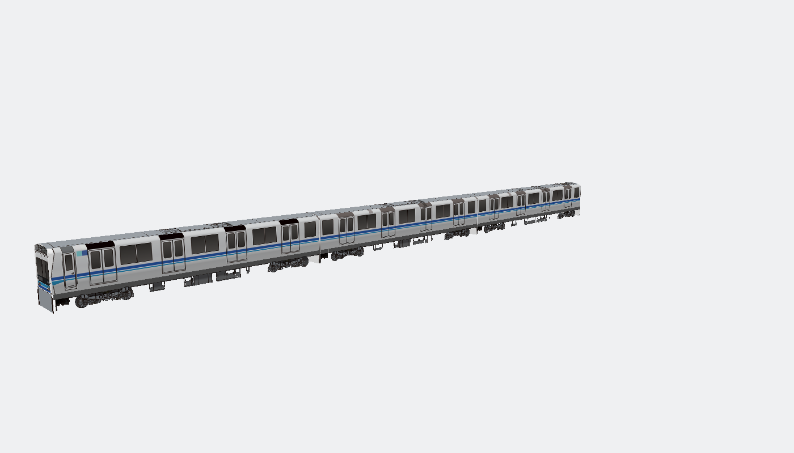

#474 tokyometro-07 —— 其他（ot-4）
MC 原话：其他：く
根因：纸模端盖是全平直竖板，鼻锥只画在侧面贴图里。
修法：平头 loft 重建为鼻锥几何（鼻尖半宽比 0.95、风挡约 11° 最缓、鼻尖 y≈1.9）；swap_caps 修复：car2 司机面在 end1，交换后重建并核实。
推送：提交 f0f3fce5（models-pipeline，一车一 commit；wakayama-2270 为两 commit）
完整 SHA：f0f3fce5ea46db9f4e7fa17941b424d1fca79e21
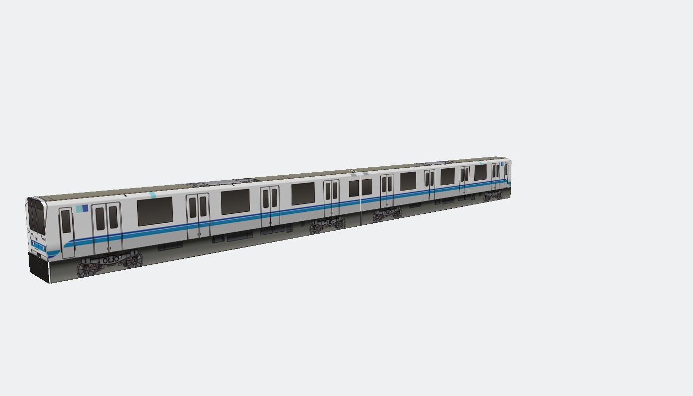

#475 tokyometro-10000 —— 编组错误（fm-2）
MC 原话：编组错误
根因：实车 10 辆，模型 3 辆。
修法：补成 10 辆满编（net2 素中间车＋net3 带弓中间车；car10＝原 car3 改名）。3/9 号車受电弓 1 架 vs 实车 2 架的轻微偏差已注明（有弓优于无弓）。
推送：提交 68ec9742（models-pipeline，一车一 commit；wakayama-2270 为两 commit）
完整 SHA：68ec974271190caaa896ee4c69bd95980c5762bd
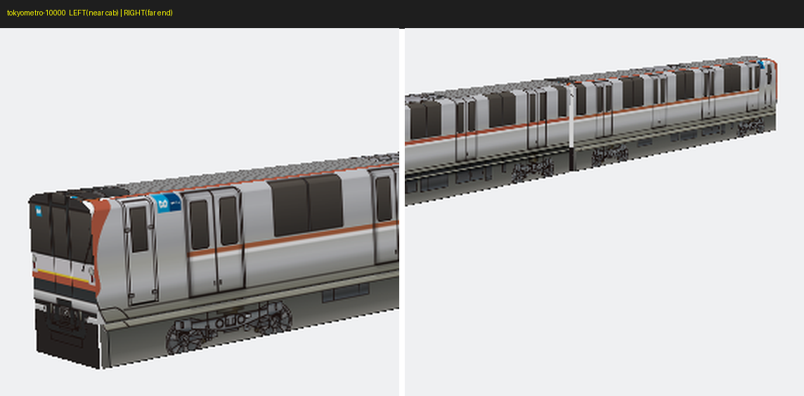

#476 tokyometro-13000 —— 编组错误（fm-2）
MC 原话：编组错误
根因：实车 7 辆，模型 2 辆子集 [CM2][CM1]，缺 5 辆中间车。
修法：未推（无图）：图纸库只有 1 张先头车净片；PDF 的 p2/p3 是 03系，不可用。2 辆子集方向本身正确。
推送：未推——未推：无图（实车 7 辆、模型 2 辆；图纸库只有 1 张先头车净片；MC 14:34 授权决断：先接受现有子集，等有图再说）
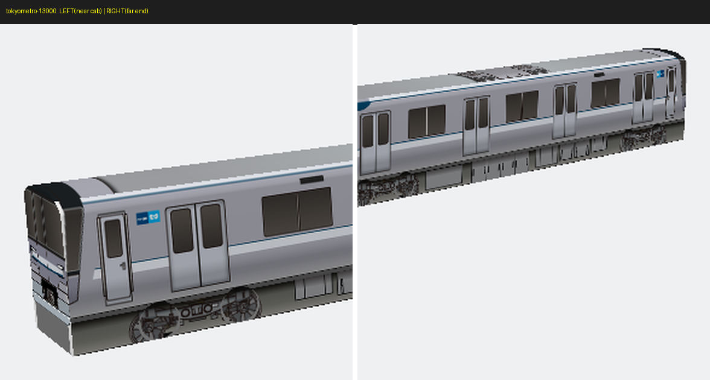
#477 tokyometro-17000 —— 编组错误（fm-2）
MC 原话：编组错误
根因：实车 10 辆，模型 2 辆。
修法：补成 10 辆满编（p2 素中间车＋p3 带弓中间车；先头车复用远端返工版字节，圆角く形鼻锥＋真实比例司机面，v1 重建会回退；car2 同名替换为 p2 中间车）。
推送：提交 8ca5e890（models-pipeline，一车一 commit；wakayama-2270 为两 commit）
完整 SHA：8ca5e8900d8bb32de883adacbd93b6cd375ed8fe

#478 tokyometro-18000 —— 其他（ot-5）
MC 原话：其他：く，然后检查一下编组齐了没
根因：纸模端盖是全平直竖板，く只画在侧面贴图里；另 MC 要求检查编组齐了没。
修法：く warp R＝0.22、edge_back F＝−0.18，两头先头车。编组核查：实车 10 辆、现模型 2 辆子集；原建模 REPORT 称“图纸只有先头车 1 张净片”是错的——同一份图纸（Vayashi tokyometro_18000_hanzomon.pdf）实际是三张完整净片并排（先头车＋普通中间车＋带受电弓中间车）。本次不补中间车：6 辆可用净片建，但 18500 Tc1 / 18600 Tc2 的司机端净片图纸里没有，补了也得不到 10 辆全编组，且补 6 辆超出本任务范围。⚠️ 跟进选项：若另行派发，图纸在 batch251 g13 artwork（p2 普通中间车、p3 受电弓中间车），中间车实车长 19.5 m（非 20.005 m），18500/18600 需另找带司机端图纸或等 MC 定夺；不建议无图虚构司机端。
推送：提交 d8601806（models-pipeline，一车一 commit；wakayama-2270 为两 commit）
完整 SHA：d86018069dd5f99cf1fcd6c1165b7c0886277eee
#479 tokyometro-9000 —— 编组错误（fm-3）
MC 原话：编组错误
根因：旧 3 辆本身方向正确，只缺 3 辆中间车（实车 6 辆）。
修法：新 car4/5/6 克隆 car2，3→6 辆；car3 本身已是翻转到位的尾端司机车，不另翻（硬翻反而修坏）。克隆＝字节复制＋mesh/node 改名，几何/UV/贴图全不动。
推送：提交 4ca9521f（models-pipeline，一车一 commit；wakayama-2270 为两 commit）
完整 SHA：4ca9521f606a2c569d100474304ed0147ba7d0b2

#480 tokyotoei-10300 —— 编组错误（fm-3）
MC 原话：编组错误
根因：旧 3 辆外端 −Z 是贯通端 FAIL（实车 10 辆）。
修法：补 6 辆中间车＋翻转 car1 作尾端 Tc2，3→10 辆；新中间车一律只克隆 car2——car3 车顶贴图印有两副受电弓（纸模原图问题，实车每辆至多 1 副单臂弓），不扩散；car3 本体未动，留待 MC 定夺。
推送：提交 4cb55e82（models-pipeline，一车一 commit；wakayama-2270 为两 commit）
完整 SHA：4cb55e82b25be4c183f2b1914a64a0be47c7f3bb

#481 tokyotoei-12000 —— 编组错误（fm-3）
MC 原话：编组错误
根因：旧 2 辆外端 −Z 是贯通端 FAIL（实车 8 辆）。
修法：补 5 辆中间车＋翻转 car1 作尾端 M2c，2→8 辆；楔形头随翻转落到远端。克隆＝字节复制＋mesh/node 改名；翻转＝纯几何绕 Y 轴 180°、UV 与贴图不动。
推送：提交 33be43e6（models-pipeline，一车一 commit；wakayama-2270 为两 commit）
完整 SHA：33be43e6cdf27b197f65c48d3c961696cf59e646

#483 tokyu-2020 —— 贴图颠倒（tx-1）
MC 原话：贴图颠倒
根因：仅 car1 前脸整面全倒。
修法：flip_band，只翻 rows [0,265)——整幅竖翻会把灯/微笑弧/X 盒/橙角翻到采样区（v∈[0,0.68]）之下、前脸全黑。修后风挡上、灯在风挡下、微笑弧在灯下、X 盒在底，与实车 2121F 一致。
推送：提交 092e3a82（models-pipeline，一车一 commit；wakayama-2270 为两 commit）
完整 SHA：092e3a827410828fd0407696bccde5f749736007

#484 tokyu-300 —— 编组错误（fm-3）
MC 原话：编组错误
根因：MC 判编组错误，但单 GLB 长 24.006 m＝实车 2 辆铰接全编组（23.98 m），两端均为司机面，plain/site 均 OK；“1 个文件”不是“1 辆车”，无缺车、无错。
修法：未推（无错）：不修不推。
推送：未推——未推：无错（单 GLB 即 2 辆铰接全编组，两端均为司机面）
#485 tokyu-3020 —— 编组错误（fm-3）
MC 原话：编组错误
根因：旧 3 辆外端 −Z 是贯通端 FAIL（实车 8 辆）。
修法：补 4 辆中间车（car4–6 克隆 car2、car7 克隆 car3）＋翻转 car1 作尾端 Tc1，3→8 辆。
推送：提交 4d353e19（models-pipeline，一车一 commit；wakayama-2270 为两 commit）
完整 SHA：4d353e19854970c2618e737868acb74bad536196
#486 tokyu-5000 —— 编组错误（fm-4）
MC 原话：编组错误
根因：整列只有一端司机面：car3 名义デハ5000、实际是中部 T 车（两端贯通端件）；实车 10 辆。
修法：新增 car4＝net1 翻转先头车（デハ5000形 5002，Tc1），3→4 辆；两头风挡车号均为“5102”（图纸只有 5102 司机端片）；实车 10 辆、模型 4 辆子集——6 辆中部车无图纸，4 辆已是图纸允许的最大编组。
推送：提交 4c008674（models-pipeline，一车一 commit；wakayama-2270 为两 commit）
完整 SHA：4c00867487c3da241e150699ca65daea87875860

#487 tokyu-5080 —— 胶耳未清（ge-4）
MC 原话：胶耳未清
根因：端件裁切框把纸模粘贴耳框进贴图，端盖 UV 拉满车宽后在司机面两侧形成通高白竖条；贴图问题，非几何。面 77.5–79.5%→100%。
修法：端件框横向收紧到端面轮廓、只取端面本身，裙板白纸残留同步清；手术式 GLB 补丁，POSITION 逐字节与 v1 一致。
推送：提交 c8d4b8d4（models-pipeline，一车一 commit；wakayama-2270 为两 commit）
完整 SHA：c8d4b8d41ef84f6f313cf52c4fbc0da5be364c23

#488 tokyu-6000 —— 胶耳未清（ge-4）
MC 原话：胶耳未清
根因：端件裁切框把纸模粘贴耳框进贴图，端盖 UV 拉满车宽后在司机面两侧形成通高白竖条；贴图问题，非几何。贯通端面仅 28.6–28.8% 宽，司机面 73.8%→100%。
修法：端件框横向收紧到端面轮廓、只取端面本身；手术式 GLB 补丁。接替专员修正了原 v2 的裁切错误：贯通端面（car1 end1、car2 front/end1、car3 front）原按司机面比例 (48–52, 327–346) 裁，窄面两侧各留约 84 px 白耳，修正为 [136,244)/[142,257)。
推送：提交 e901004a（models-pipeline，一车一 commit；wakayama-2270 为两 commit）
完整 SHA：e901004a0a5c4106fc2cb9fabf5a9219046b6427

#489 tokyu-6020 —— 贴图颠倒（tx-1）
MC 原话：贴图颠倒
根因：仅 car1 前脸整面全倒（与 2020 同款）。
修法：flip_band，只翻 rows [0,292)；修后与实车 6721 一致，橙角左下可见。car2/car3 贯通端不动。
推送：提交 e266d63b（models-pipeline，一车一 commit；wakayama-2270 为两 commit）
完整 SHA：e266d63bd07c7779128e5f614d38c643d473f023

#490 tokyu-7000 —— 编组错误（fm-4）
MC 原话：编组错误
根因：辆数、两端司机面均对；错在 car1 的 −X 壁、car3 的 ＋X 壁司机门落在贯通端（全车共用一张 side 贴图，两壁 UV 方向相反，司机门在 u≈0）。
修法：只对错的那面做 U 镜像（U→1−U，逐顶点，只动 side 图元独立的 TEXCOORD_0，V 不动；side 贴图无文字/logo，镜像安全）。数值验证：两车两壁 u＝0（司机门）均落在司机端；目检四面壁司机门均紧邻司机端。
推送：提交 64882f15（models-pipeline，一车一 commit；wakayama-2270 为两 commit）
完整 SHA：64882f15165071c2c7fc51920732941a90d96510

#500 toyamatihou-9000 —— 其他（ot-5）
MC 原话：其他：楔形
根因：纸模端盖是全平直竖板，楔形只画在侧面贴图里。
修法：楔形 warp R＝0.50、edge_back F＝−0.15，两端。
推送：提交 ad2dc24c（models-pipeline，一车一 commit；wakayama-2270 为两 commit）
完整 SHA：ad2dc24ccf81f8b471c35edcf011e0d6cf2fefbc

#506 tukubaexp-tx2000 —— 其他（ot-5）
MC 原话：其他：く
根因：纸模端盖是全平直竖板，く只画在侧面贴图里。
修法：く warp R＝0.30、centre_back F＝＋0.18（2面折れ），仅 car1；只修く头型，不扩编（图纸只有 3 张净片，缺 2400/2500/2600 无图）。三辆侧面车号牌均为“TX-2153”（应为 2153/2253/2353，既存缺陷，MC 本次只点く头型、未授权改，不修）。
推送：提交 71bc8b20（models-pipeline，一车一 commit；wakayama-2270 为两 commit）
完整 SHA：71bc8b206fdb1d8b369e38c78202d43ed94ec298
#512 wakayama-2270 —— 胶耳未清（ge-5）
MC 原话：胶耳未清
根因：端件裁切框把纸模粘贴耳框进贴图，端盖 UV 拉满车宽后在司机面两侧形成通高白竖条；贴图问题，非几何。两司机面各一侧白色梯形耳（带斜折线），面偏心、车灯偏左，面 79.8% / 79.2%。
修法：两框收紧（car1 0..384、car2 98..479）＋两裙板同裁；面心回正、车灯回正、联挂器不移位。分两 commit（car1、car2 各一）。
推送：提交 fbbdbedc + ce6eee44（models-pipeline，一车一 commit；wakayama-2270 为两 commit）
完整 SHA：fbbdbedc96ded317ed7cee93615262e7facdbc71（car1）／ce6eee444d83a90960293ffb3b263e3a29c985b5（car2）

#515 yakuri-ko1 —— 胶耳未清（ge-5）
MC 原话：胶耳未清
根因：端件裁切框把纸模粘贴耳框进贴图，端盖 UV 拉满车宽后在司机面两侧形成通高白竖条；贴图问题，非几何。两端同形，风挡区以上两侧浅灰梯形耳（带斜折线），面约 69%（风挡区）。
修法：按图纸实测面轮廓线（框内竖线列 26/145 → 贴图列 67/370），行 0..163 的耳逐行向内填色（风挡区填框深色、橙面区填橙色），行 ≥164 一字不动；frontf 取新 front 水平镜像。
推送：提交 101bd111（models-pipeline，一车一 commit；wakayama-2270 为两 commit）
完整 SHA：101bd111e9d660f05ba939ae71b680b43e3506ef
#520 yokohamasub-10000 —— 贴图颠倒（tx-2）
MC 原话：贴图颠倒
根因：前脸本身正立，是端盖 UV 取值错了（v 0–0.847 把屋顶受电弓条框进端盖顶部 32%、前脸压扁）。
修法：裁切前脸行（rows 202–610）＋UV v/0.847，前脸占满端盖：表示/头灯上、风挡、青绿带、银板、橙尾灯下。⚠️ 左缘胶耳未修（x 0–43，约 12.8% 宽白竖带）：任务定本车只修贴图颠倒，无干净的裁切-重标方案（风挡宽已正确 1.96 m，拉伸会变 2.33 m），留待以后单独处理。
推送：提交 36ff81a3（models-pipeline，一车一 commit；wakayama-2270 为两 commit）
完整 SHA：36ff81a3d6a9ce2a327bbb5f1403a63a254caaa2

#521 yokohamasub-3000v —— 编组错误（fm-4）
MC 原话：编组错误（MC 写 yokohamasub-3000，实为 yokohamasub-3000v，index 已核实）
根因：翻转车 car2 侧面帆形三角朝向贯通端，与 car1 相向（“><”）；实车三组照片核实各车三角统一朝あざみ野端（“>>>”）。
修法：两侧面贴图每面帆的浅蓝楔以双叶门中心镜像；海鸥剪影先 inpaint 再原位重画（暗蓝像素与原图完全一致，无重影）。辆数 2 vs 实车 6，3612–3615 中部车无图纸，修不了。
推送：提交 7b9761dc（models-pipeline，一车一 commit；wakayama-2270 为两 commit）
完整 SHA：7b9761dc17126cd55df464afb0031b7f33ea12f7
说明：修前图优先取各组同相机 v1/orig 渲染；组内无修前渲染的车，修前图取快速审核页原斜视角图（img/ev/）或批次审核页原图（jr3d-audit batch*/…/user_oblique.png）。未推车无修后图。工作目录：~/workspace/jr3d/work/mc-review-rework2-20261127/（DISPATCH.md＋各组 SUMMARY.md/REPORT.md）；建页脚本：rework-page/build_page.py。